第一场：王的子民
《创世记》：以色列的起源
罪的爆发——和神的回应
当伊甸园众门在亚当和夏娃身后掩上之时，这并不意味他们就不再是神造他们时的样子了。人类的堕落在我们所有人身上造成的后果，并不是叫我们不成为人——我们仍然具有神的形象 (《创世记》5：1；9：6)。但是我们的悖逆却深深地影响到我们会成为怎样的人。因此，亚当和夏娃在他们犯罪过后照样结为连理，而且夏娃还生了两个健康的儿子。正如神在人类堕落前所安排的，这四人组成了一个家庭。可是一旦我们进入《创世记》第4章所述的故事时，我们看到就在“堕落”之后，可怕的变化开始显现。
该隐和亚伯是第一对兄弟，但亚伯那影射着空虚 (《传道书》中详细探究过的主题)的名字，就暗示了将有一场劫难要到来。¹该隐是一个农夫，亚伯是一个牧羊人。原本他们当享受彼此的情谊，且在他们不同的工作中相互扶持，但该隐开始嫉妒亚伯。事情就在兄弟俩各自给神献祭之时临到了危急关头。神看中亚伯的祭物，却没有接纳该隐的祭物，因为该隐心存罪恶。神慈悲地对该隐说，如果他所做的合乎正义，他的祭物也同样会被接纳——接着就警告他说，他若不留意，罪就会像野兽般扑向他并控制他。可是，该隐的怨恨有增无减。他请亚伯去他的一块田里散步，在那里杀了他的兄弟。难以想象的事情就这样发生了。神本意是将家庭作为情谊和喜乐的源泉，如今却成为一个充满嫉妒、怨恨和谋杀的地方。
因这次谋杀如此令人发指，使得我们会料想神将即刻毁灭一切。可是他却没有这样做，神为他的造物所立的命令依然存在。该隐结了婚，还生了一个儿子，名叫以诺，然后建造了一座城，并按着他儿子的名字称呼那城。该隐及其家人仍然是具有神形象的人，但是这故事清楚地显明了，如今在“堕落”后陷入罪中的人有了一种可怕的能力，这种能力会将他们的生活引向错误的方向。家庭生活和神所赐的其他恩典，都
可能成为痛苦和复仇的根源。²我们就需要在这样的背景下去了解接下来的事情：该隐建了一座城，人们也开始在许多不同方向上发展了文化(《创世记》4:17-22)。
“文化”是我们为社会中组织化的活动所取的名称，比如说制作音乐，或者建造房屋，抑或建立经济或政治机构。我们有时候会把《创世记》1：26-28的内容描述成文化使命，因为人受命要对神那上好的造物行使尊贵的管家职分，所以就需要开发神的造物隐藏着的各种潜能。于是，世间万物就会像一场盛大的交响乐，愈发彰显出神的荣耀。因此，尊贵的管家职分就包括了探索并发展在建筑、农业、艺术以及家庭生活中所能达到的成就。叫我们潜心于这样的工作，乃是神一直以来的心意。
在《创世记》第4章中，我们读到有关该隐 (他建了以诺城)，雅·八 (他是住帐棚、牧养牲畜之人的祖师)，犹八 (他是弹琴吹箫之人的祖师)，土八该隐 (他是打造各样铜铁利器的)和拉麦 (他创作诗歌)的故事。我们因此不能认为所有的文化活动都是罪的结果，相反，这诸多的文化成就，就产生于人们开发了神的造物那固有的潜能。这类追求，本质上是好的，而不是罪恶的。这就是汉斯·容科梅克 (HansRookmaker) 的小册子《艺术何需辩护?》(Art Needs No Justification) 所要表达的意思。³容科梅克的意思并不是说我们应该为了艺术的缘故而拥护艺术。对艺术的证成乃在于，神造世界时就已经让人类在这个世界上有能力去做富有想象力且艺术的活动了。我们可以通过文化活动这一基本途径，来服侍和荣耀神。⁴然而《创世记》第4章的经文提醒我们，罪人将这些上好的文化活动引向了错误的方向。
在知悉了我们所确知的该隐后，每当我们想起他建了一座城并且管理它，我们的心便沉重了——即使建一座城是开发受造物隐藏着的潜能的一个重要部分。以为神创造的世界仅仅是一个原始的、乡间的公园，这是不对的。神同样意图发展城市。城市化不一定就是罪恶的：城市可以是人类繁荣昌盛和神得着荣耀的好处所。⁵但是，第一座城由该隐所造的事实，却让我们担心神原本的心意可能落空。我们太了解城市了，它会变成污秽和暴力的场所。该隐的嫉妒和怨恨，会如何影响以诺城里和
周边的城市生活呢?⁶于是这座城的文化就开始发展——这本可以是人类开发万物这一使命的一个圆满实现——但，它却开始于一个已然渎视神至高统治的人。
诗歌是神奇妙恩典的赐予，圣经中也有许多颂词与诗章，它们展开了那遵从神命令之言语的美妙和力量。在圣经中，拉麦是第一位诗人。但是在他的诗歌里，神奇妙的恩赐已然歪曲扭转成满有仇恨和暴力的威胁工具：“若杀该隐，遭报七倍；若杀拉麦，必遭报七十七倍”(《创世记》4：23-24)。再次，一件好的恩赐 (诗歌)被使用了，却是以无视和拒绝神临于世界的权柄和他作为赐予者的身份的方式。
《创世记》第5章的家谱，给我们讲了一个从亚当到挪亚(拉麦的儿子)的人类发展的故事。挪亚意为“安息”，拉麦最大的希望就是神将通过挪亚，给在这堕落的世界中劳苦工作的人们带来安息。拉麦深深知晓，堕落已经影响了生活的各个方面，不仅仅只影响到劳作，而借着挪亚的出生，他希望事情会有所好转。可是，事情并没有变得对受造物更有好处———至少起初是如此。《创世记》6-9章讲述了挪亚和毁灭性的洪水的故事。尽管拉麦盼求安息与宽慰，可是洪水带来的却是一场可怕的审判。
《创世记》6：1-4的情节令人困惑，在这一段中，神的儿子与人的女儿交合，他们的后裔就是所谓的涅菲里姆 (Nephilim)——伟人或某种巨大的人。⁷这个故事的意义就在于，神创世的命令再一次(就像《创世记》第3章的内容一样)被用灾难性的方式违背，这同样带来了神的审判。这种逾越了禁区 (在人与非人之间的交配)的交合是罪的潜在弊病的一个症候，而《创世记》6：5-8就显明了情况到底变得有多糟糕。罪恶，已经勒住人类生活的咽喉！
事情达至如此糟糕的地步，以至于神决定用一场大洪水毁掉这个世界，重新来过。⁸挪亚将成为一个新亚当，他会如拉麦所盼望的那样，带来一种新的安息的可能——可是，只能在可怕的审判之后。这场由神所施、泛滥于地上的洪水，乃是一种“创造的逆转”，它给全世界带来了灾难。大量的水倾泻于地上，如“大渊中突然喷发的泉涌”，持续降了40昼夜的大雨 (《创世记》7：11-12)。然而，尽管因罪而来的审判令人
畏惧，但需要重申的是，神的承诺，即满有恩惠地恪守起初创世的目的，是再清楚不过的。神将他的安排晓谕挪亚，并吩咐挪亚建了一座方舟，挪亚、他的大家庭以及从地上各种动物中挑选的一对进入方舟，这样他们将免于审判。这是一个多么美的主日学故事，以致我们往往会忽视了它对于所有造物的重要性。为什么要带这些动物进入方舟?因为神关心他的所有造物---包括动物。拯救并不止于人类：整个受造之物都要得着救赎 (参见《罗马书》8：21)。
人的得救和灭亡，喜乐和哀伤，就会反映在这个动物界和群体的祸福之上。动物并不是作为盟约的一个独立的伙伴，而是一个参与者，与人 (独立合作者)一起参与到盟约中来，共同分享应许和遮蔽应许的咒诅。动物满有不祥的预兆，却同时还满有信心，和人一起等候这应许的实现之时。当这一时刻暂且发生的时候，它们得以再一次自由地呼吸，而这一时刻还将有最终决定性的到来。⁹
由于我们对得救狭隘的认识，所以我们往往忽视了圣经在这一方面所强调的。¹⁰
洪水的故事，既显示出神是一位圣洁的审判官，又告诉我们，神也是一位慈爱的拯救者。当挪亚与他家人从方舟里出来时，神就向挪亚许了好几个诺言，这些诺言构成了他与挪亚之间的盟约(《创世记》9：8-17)。“盟约”，这个词描述了神和他子民之间的关系，罗伯森 (O. PalmerRobertson)把它卓有成效地定义为一个“主权地施行的血盟。”[1]让我们一一地考虑此定义中的三个主要部分：
1.一个契约。盟约论及了在神与他的子民之间一个深入的个人关系，这种关系亲密到让人认为神把自己与人们粘在一起或绑在一起了。在之后与以色列民的诸盟约中，一个流行的说法是，“我就作你们的神，你们也作我的子民”(如《耶利米书》7：23)。
2.在血中。一个盟约就像一场婚姻 (在《旧约》中也被称为“盟约”)，¹²是庄重地、在法律意义上建立起来的关系。仪式中的宰杀流血献祭，象征了一个盟约庄重而公开的本质 (如《创世记》8：20-22)。
3.主权的施行。这个盟约并非那种经共同协商才敲定的条款，也非平起平坐的合伙人间的关系。神是那位至高无上的主，也只有他才能制定具有盟约关系的条款。
邓布雷 (Dumbrell) 正确地指出, 当 (在《创世记》6:18) 神晓谕挪亚他将要与他立约时，这里的“约”指的是一种已经存在的关系。¹³邓布雷认为，在《创世记》9章中，神是在更新他的创世之约，他13如此行是通过挪亚立定盟约。《创世记》9章把挪亚描述成第二个亚当，这证实了上述所言。挪亚承受使命的方式与亚当的一样——且几乎只言不差。神说:“要生养众多,遍满地面”(比较1:28;9:1、7)。¹⁴神借着14挪亚开启新的篇章，可他创世的目的是一如既往的：挪亚作为第二个亚当承受了使命。而且，神与挪亚所立的盟约的内容，惠及所有受造物。在8：21中，神说到他再不会咒诅这地、毁灭各种活物了。在9：8-17中神说得很清楚，他的约是与挪亚及其后裔以及各样的活物所立的。彩虹就是神与“地上一切有血肉之物”(9：17)立约的标记，这约满有恩慈。
于是，挪亚之约就指涉了一种特殊的关系，这关系是由神主动与挪亚和他的家缔结的。在这背后，是神的创世之约。所以，神实在地带领挪亚，并借着挪亚去完成神一直以来的整个创世计划。
可是，哎！神这新的开始，并没有带来如拉麦所希望的完满的安息。整个地上的人都来自挪亚的三个儿子，闪、含和雅弗 (9：18)，可没过多久，在挪亚及其儿子们的家庭生活中，罪又表露无疑了(9：20-28)。这再一次表明文化的发展具有矛盾性。一方面，农业确实进步了。挪亚是第一个种葡萄树的人，也是第一个发展起神所赐那惊人的制酒艺术的人 (9：20)。如果没了赤霞珠、灰比诺和美乐，生活又会是什么样儿呢?尽管酒和制酒的手艺本身都是好东西，但它们也可以被有罪地滥用。这世界上的第一位酿酒人喝醉了酒，他的儿子含在帐篷里发现了他正赤着身子公然在那儿大睡，这使他自己及其家人蒙受了耻辱。很难确定挪亚的儿子对挪亚的行为的反应存在什么问题——是涉嫌性侵犯吗?还是含对他父亲赤身露体一事散布流言蜚语乃是一种邪恶的不尊不敬呢?总之，家庭进一步的破裂发生了。挪亚咒诅了含的儿子迦南 (从而咒诅了他自己家族的这一脉后裔)，而祝福了闪 (以色列人将会是这一脉的后裔)。
《创世记》第10章讲述了从挪亚的儿子们生发出来的这世上的列邦。这积极地成全了神给亚当的托付，这个托付神曾向挪亚重复过：“要生养众多，遍满地面。”然而，故事发展到这个阶段，我们已并不讶于这积极的发展——人口激增与文化进步——也有其消极的一面。在下一章中，《创世记》讲了巴别塔的故事。《创世记》的这一段，表现了到目前为止圣经戏剧中罪的高潮。巴别塔，是亚当的后人再一次从神手中夺取自主性的一次巨大的群体性尝试。
如前所述，建立一座城的冲动，是内在于神的世界中、正常的文化发展的一部分。但是这种冲动会走错方向，而在巴别塔的故事中，我们大规模地偏离了。当人们向东迁徙时，他们建了一座城，并在城中建了一座巨塔。神的心意是人类应当蔓延和散住到世界的各处 (“遍满地面”)，而他们就是通过上述方式背着神的意愿而宣称了他们自己的意愿。他们建的这座塔，可能是一座塔庙，是用来专职崇拜古代美索不达米亚“众神”的神殿的最重要的部分。“巴别”暗示了这特定的城和塔的本身的含义。巴别意味着“神之门。”¹⁵在古代美索不达米亚，建一座塔庙为的是起到梯子的作用，借着它，神或众神就能从天上下到城中，并施与祝福。在它的顶上，有一个小房间，在那儿陈列着一张床，一张桌子还有些许新鲜的食物，以供神从天上下来的时候享用以焕发精力。
然而，当《创世记》第11 章讲到巴别塔时，讲故事者提醒我们，“巴别”与另外一个意为“混淆的”或“混乱的”希伯来词有关。对于这讲故事者而言，“‘巴别/巴比伦’的名称，并不是‘神之门’的意思，如巴比伦人所坚持的那样，而是‘混乱的’的意思，让我们想起‘荒唐事’和‘洪水’这两个发音相近的词。这一词语远不是人类文化中最具权威的词，却是人类试图违抗他的创造者而一意孤行时遭受失败的终极象征。”¹⁶尽管神先前就命令人类要散布到世界各处，然而在美索不达米亚，这个群落反而为了他们自己，选择去建造一个安全中心，想借此掌握他们自己的处境并保护自身。他们寻求一种虚假的自治集体主义和一种自恃为其自己的设计的荣誉感，而不寻求具有神恩典的团体与
身份。在这里，那吃分别善恶树上果子的场景再次浮现，可这次，是在盛大的社会范围内上演的。他们以建这座塔，来要求神降临并祝福他们的努力。
在一项满有精彩反讽的叙述中 (《创世记》11：5-6)，神实实在在地降临了，来看一看这些离经叛道的城市建设者正忙于何事。虽然他们将他们的塔视作一个奇迹——一架通往天堂的天梯——可是神必须从天降下，只是为了能看一看这个东西！神完全没有祝福这一工程，反而责备了曾激发此工程的傲慢自大。他审判了这百姓，变乱他们的语言，分散他们在全地上。因此神就迫使他们去完成了他的意志，这意志是为他们所设的，叫他们散布在这全地上。
巴别塔，为人类那生生不息的背离神而去营建自己国度的欲望，竖立了一座丰碑。但是神不允许他们为生存而错误地召集在一起，所以他分散了巴别塔的建造者们。在圣经中，名称指的是身份。凭借这城和这塔，人们寻到了一种虚假的身份，一种基于人类自主性之上的荣耀(《创世记》11：4)。因为这个缘故，神就用审判他们的罪来回应他们，而且终止了他们那野心勃勃、偶像崇拜的建造计划。然而正如我们屡次所见，审判却伴随着怜悯。尽管《创世记》11章显明了在受造界中人类的罪孽被推向了高潮，可是，《创世记》12章仍表现了另一个全新的开始，乃是神永不更改地继续实现他创世之目的时所开启的一个全新的开端。
亚伯拉罕之约：承蒙祝福，成为祝福
到目前为止，圣经故事包含了整个人类的生活与实践。但是现在，面对着巴别塔的灾祸——它玷污了神那上好的造物，乃迄今罪的顶峰——神再次积极行动起来，并把注意力转向了一个人，亚伯拉罕。实际上，亚伯拉罕和他的后嗣是《创世记》剩余部分的主要关注点。¹⁷
神呼召亚伯拉罕离开他的国 (吾珥)，他的族，和他的父家，往神所指示给他的那地去 (《创世记》12：1-3)。这是一个根本的彻底的呼召，即使对于在21世纪的我们来说，凭借我们所有的交通和通讯上的便利，要盘算着从一个国家移居到另一个国家也是很难的。我们仅能模
糊地猜测到，要求一个像亚伯拉罕这样的人离开他所熟悉的一切——家人、部族、故乡，还有国家——然后长途跋涉且前路未卜地去到一个神秘的目的地，这对于他来说势必意味着什么。神要求亚伯拉罕放弃所有的安全象征和自我自主，正是借着这些东西，巴别塔建造者们曾经试图坚固他们自己的身份。可是令人惊叹的是，亚伯拉罕为了顺服神，真的抛弃了它们，带着他的妻子(撒莱)，他的侄子罗得，还有他们的大家庭，前往神要带领他们去的地方。
神做这一切事是为了什么目的?他把焦点缩小到亚伯拉罕身上，他就遗弃了其他所有的人吗?《创世记》12章的前三节向亚伯拉罕讲明了神计划要通过他所做的事——而这计划是卓著非凡的。神应许 (1)使亚伯拉罕成为大国；(2)赐福于他；(3)使他的名为大；(4)让他成为一个祝福；(5)凡祝福他的，就得着祝福，凡审断他的，便遭咒诅(审断)；(6)最后地上的万族都要因他得福！这地上的族群曾设法借着巴别塔这建筑而为他们自身立名，可是神否决了他们野心勃勃的计划——他们计划着要以自己的方式去做事。然而如今，神应许他们将使亚伯拉罕的名为大，使他成为大国。以前巴别塔的那些人试图给他们自己
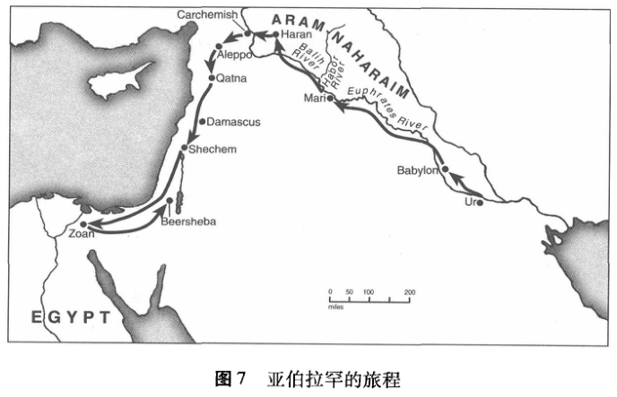
带来的奖赏——名声、安全，以及给后人的遗产——神都白白地赐给了亚伯拉罕。我们开始领会神是如何回应其受造物偏离正路的事情了。因着神将使之成为一国的亚伯拉罕，以色列人将在世界的民族中做神的子民，而且，因着这一国，神将赐福于地上的万民 (18：18-19)。
从《旧约》故事的这里开始，叙述的焦点就集中在亚伯拉罕和他的后裔上了。但是尽管神在这里与亚伯拉罕及他的家作了承诺，可神并未忘记他为世上万族所设的目的，为描述12：1-3中的那些应许所选用的语言清楚地表明了这一点。“祝福”这个词以不同形式被使用了五次，它在《创世记》的前几章中是格外重要的一个词。¹⁸“祝福”这个18富有生气的词显示神意欲赐给他所造的人所有他们需要的东西，使他们能在神所创造的世界中，完满地实现神为他们所预定的生活。当人背离神所吩咐的预旨时，与前述相反，“咒诅”这个词就表达了临到他们身上那使人畏惧的审判。
12：1-3中神祝福亚伯拉罕的言语，再度用另一方式显明了神要借这个人计划要做事情。纵观《创世记》1-11章的内容，作者故意把“祝福”这个词的五次重复与“咒诅”这个词的五次出现对立起来。¹⁹神加19之于人类的咒诅或审判，意味着他们丧失了自由 (3：14-16)，他们与土地隔绝 (3：17-19)，他们彼此的疏远 (4：11)，还有他们在德性与灵性上的降格 (9:25)。²⁰《创世记》12:1-3 中“祝福”的重复出现, 就宣称了神要借着亚伯拉罕而竭力将那施与造物之上的审判的效果颠转过来。纵然罪已经为造物带来神的咒诅，可是神仍全力恢复他的目的，这个目的就是要赐福于他所造之万物，而亚伯拉罕将成为整个世界超凡复原的媒介。
因着亚伯拉罕，“地上的万族都要得福”。²¹《创世记》12：3的这最后一句话，是这几节经文的高潮结语，也指出了神选择亚伯拉罕的最终结果。²²神缩小了他的救赎焦点于一个人、一个国之上，但是他最终的目的是要给所有的造物带来救赎的福分。罪使整个受造界堕落了，而神对亚伯拉罕的应许，是神对罪的回应：神要重建这个世界。“《创世记》12：1-3是对堕落的后果的答复，其旨在于恢复神对这个世界的目的，《创世记》1-2章正是将我们的目光吸引到这一点上。这几节经文所提
出的是一个为这个世界的救赎历史所设计的神学蓝图，这蓝图的实施如今通过对亚伯兰的呼召已箭在弦上。”²³正如戈登·韦纳姆 (GordonWenham)使人受益匪浅地说道：
给予亚伯拉罕的那些应许，更新了刚开始在《创世记》1-2章中体现出来的对人类的展望。他充当的是第二亚当式的人物，就如在他之前的挪亚一样。亚当获赐伊甸园，而亚伯拉罕得迦南地作他的应许。神告诉亚当他将生养众多、遍满地面，而亚伯拉罕得应许说他的后裔会如天上的众星般繁多。神与亚当在伊甸园中同行，而亚伯拉罕被告知要行走在神的面前。可见，亚伯拉罕的出现，被视作出现在《创世记》1-11 章中诸多问题的答案：因着他，地上的万族将得蒙祝福。²⁴
从起初，神的子民就“负有使命”。他们受选，乃要作他人蒙福的管道。
在《创世记》15-17章中，神跟亚伯拉罕之间的关系被说成是一个“盟约”。在第15 章中，神应许亚伯拉罕他将得大大的赏赐。亚伯拉罕问道这如何可能?因为他没有儿子继承这些祝福。神应许亚伯拉罕，他的后嗣将总有一日如天上的繁星众多。神还应许他，将赐这地给他的后嗣。他们将寄居异地达四百年之久，不过神会带领他们归回并继承这应许之地——迦南。²⁵当亚伯拉罕向神的应许提出疑问时，神开始了一项立约的仪式。亚伯拉罕将三只动物劈成两半，一半对着一半地摆列。神就以冒烟的火炉的形象，从那些动物中经过。在这个众人皆知的立约的仪式中，神表示如若他不守诺言，他就如这些动物一样四分五裂(比较《耶利米书》34：18-20)。就这样，神与亚伯拉罕立了约。
一些时日之后，神再次向亚伯拉罕显现，那时他已99岁，可仍膝下无子。亚伯拉罕俯伏于神面前，神确证了他的约。至于神，则应许亚伯拉罕他将得繁多的后裔 (17：4-6)，并应许他的后裔一片土地和居所(17：8)。此外，神自己要做起源于亚伯拉罕的国度的大君王(17：7)。神的约是与亚伯拉罕和他的后裔所立的，而在《创世记》17：9中，来
自亚伯拉罕这一宗脉的所有男子都要接受割礼的记号。在古代近东一带，割礼是大多数民族的习惯。在这里，神为了他自己的子民，完全地改变了这一惯常的文化实践的含意。对以色列人而言，它成为了一个神与亚伯拉罕及其后裔之间盟约的记号。在身体上烙下这样的永久性标记，也许旨在象征着在神与亚伯拉罕后裔之间的永久性关系。²⁶
因此，在神与亚伯拉罕所立的约中，有三个主要部分。神应许了与他的个人的关系、一个家族变为一个国，以及土地。这些应许总伴随着一种前景，那就是祝福万民。2⁷《摩西五经》(“摩西的五本书”，即《创世记》到《申命记》)的故事余下来所讲的，就是这些应许有部分得以实现，还有神子民形成的事情。克莱恩斯(Clines)把《摩西五经》的主题有效地界定为：“对先祖们的应许或祝福的部分实现——这也暗示了有部分还未得实现。这应许或祝福，既是在这个世界中主动的神圣行动，又是重申为人而有的那最初的神圣意向；而在此世中，人类的主动行动总是导致灾祸。”28
在建巴别塔的时候，人们本希望为他们自己立名，但是神应许说，当亚伯拉罕和他的后裔与他建立关系并依靠他时，他就会使他们的名为大。可正如《创世记》12-25章讲到的故事所证明的，此般相信神并依靠他的应许是很难的，而紧紧抓牢它甚至就更难了。亚伯拉罕确实证明了他对神那不同寻常的信心，因为神呼召他离开他的国和本族去到他将指给他的那地去，亚伯拉罕就遵行了 (12：1)。然而，与我们在《创世记》3章和11章中所看到的同一样对自主性的追求，仍然发生在了亚伯拉罕身上。要让他学得更好，他将不得不承受格外痛苦的改造。
亚伯拉罕得知，他自己将看不到他的后裔继承应许之地 (15：15)。无论何境，他都必须对神有信心，而值得赞扬的是，有时候他确实是做到了 (15：6)。²⁹但是亚伯拉罕与撒拉的那些故事，揭示出要达到这样的29信心该有多难啊。神已经为亚伯拉罕和撒拉作出了美好的应许，这应许关乎他们的后裔、那地，还有将要到来的大大的祝福。可是岁月推移，撒拉却还未受孕。最终，神真的祝福了她，给了她所应许的孩子。到这个时候，亚伯拉罕已经100岁了 (21：5)。当神叫他带着他“唯一的儿子以撒”到摩利亚山去将他献上为祭时，对亚伯拉罕信心的考验在
《创世记》22章中达到了高潮。这么多年以来，亚伯拉罕与撒拉苦苦等待着有个儿子，而如今，神却叫他带走以撒且杀了他。但是，就在那最后一刻，神阻止了他，并用一只公山羊代替了以撒。祁克果在《恐惧与颤栗》(Fear and Trembling) 中对这件事不无感动地评论道:
可敬的先祖亚伯拉罕啊！当你从摩利亚山回到家中，你没有因为失去什么而需要任何挽歌来安慰自己，因为你赢得了一切，保住了以撒。情况难道不是这样的吗?神不再将以撒从你身边夺走，你们幸福地在帐篷中围着餐桌而坐，就像你们在来世永远的那样。……请原谅那希望对你称颂备至之人，如果他做得并不恰当的话。他的言词像他心中所要求的那样谦恭；他的表达恰到好处的简洁。但他绝不会忘记，事与愿违，你花了100年的时间才在老年时候得到你的儿子，而你又不得不拔出刀子才最终保住以撒；他绝不会忘记，在130年中你所做最好的超不出信心。³⁰
我们不该轻看了那对于亚伯拉罕来说要时刻相信神的难度。通过这次不同寻常的事情，亚伯拉罕对神的信心获得了神对他俩之间的盟约重新的有力的确认 (《创世记》22:16-18)。
以撒、雅各和约瑟：神子民的先祖
《创世记》25-36章叙述了以撒和他儿子以扫与雅各的故事。从雅各的儿子们生发出了以色列的十二个支派。尽管神呼召亚伯拉罕的目的是降福于整个世界，但是眼下，圣经故事把注意力集中在了这个能给整个世界带来祝福的家族之上：雅各的十二个儿子，这些将要成为以色列国的十二个支派。
在这些故事中，有三个部分引起我们格外的关注。第一，神向亚伯拉罕的儿子还有他的孙子再次确认了他给亚伯拉罕的应许，以致神被称为是“亚伯拉罕、以撒和雅各的神”(《出埃及记》3：6)。在《创世记》26：1-4，以撒一定是很想远走他乡逃离迦南的饥荒，然而神向以撒显现，叫他勿要下到埃及去，而继续停留在迦南地，并向以撒保证他会
把这些地赐给他和他的后裔，叫他们如众星繁多，且通过这国祝福地上的万国。这个应许在26：23-25 中又重复了一次，雅各的情形也相似。雅各是一个复杂的人物，他欺骗父亲以撒将长子的祝福给了他 (而不是以扫)(《创世记》27章)。因这场欺骗，以扫就恨雅各且计划着要杀他，于是雅各不得不为保命而出逃。尽管他狡猾并诡计多端，但是神却在伯特利借一梦与雅各会面。途中雅各因疲惫就拾了块石头作枕头，正当他熟睡之时，他梦见一个梯子连着天与地，之上有天使们上去下来。神站在梯子的顶端，向雅各确证了他自己是亚伯拉罕和以撒的神，同时向他重申了那应许，就是要赐予他土地与繁多的后裔。重要的是，神还向雅各保证，“地上的万族必因你和你的后裔得福”(28：14)。
这些故事——尤其是那些关于雅各和约瑟的故事——的第二个特点，是家庭关系惨痛破裂这一重复出现的主题。雅各与以扫之间的不和以各种各样的方式呈现，且败坏了在他们之后的孩子们的生命。约瑟(在便雅悯出生之前)是雅各最小的儿子，很受雅各的宠爱，他挑起矛盾，说自己梦见哥哥们做他的奴仆。于是，他的兄弟们就把他卖作奴隶，还在雅各面前谎称约瑟是被杀害的。通过这一切，那从一开始就伴随着亚当和夏娃之罪所带来的破裂关系，其灾难性格局，一再出现在人类“受选的宗谱”中。这些故事并没有宽恕此种行为，它们却实实在在地叫我们直面一个严峻现实，即有关神所拣选的人物的性格。神要借着这样一些人赐福于这个世界，但是一开始他必须改变他们的内在和外在，叫他们和睦并且成熟。正如韦纳姆说的：“实质上，不管是雅各的(25:19至35:29) 还是约瑟的 (37:2至50:26) 故事,讲的都是家庭和解的故事。”3¹在约瑟的故事中，我们看到了他的成长，从一个受宠的、自私的、孤立的年轻人，到一个成熟的、无私的政治领袖，并完全地与他的家人和好了。”
这些故事的第三个共同特征是，当神的百姓面对许多挡在神为他们所设的计划前的拦阻时，就会有从天上而来的神对他们的看顾。列祖们的妻子不是不生育就是被带去作他人的妾室，家族也会面对诸如饥荒这样的自然灾害突然来袭的威胁；反反复复，列祖们自己的蠢行和罪孽，使他们以及他们的后裔——并神的旨意——陷入危境。然而，就是在这
所有的人类动荡之中，有一件事从未更改：神仍忠实于他对亚伯拉罕的应许。这一主题或许与这些先祖叙事中神的诸多名字之一有关：全能的神 (El Shaddai) (17:1; 28:3; 35:11; 48:3; 在许多英文版本圣经中被译为“God Almighty”——全能的神)。在《出埃及记》6:3中,神说到他从前用这个名字向亚伯拉罕、以撒和雅各显现过，而它准确的意义我们并不知晓。全能的神大概“使人想起神能够使不生育的生养众多以实现他的应许”。³³在约瑟的故事中，神的眷顾是一个格外清晰的主题。在《创世记》45：5-7，约瑟认识到在他身上所发生的一切都是神所命定的，为要“保存他父亲的后嗣余种在世上，并大施拯救，保全他们的生命”。而在50：20，在他们的父亲过世后，约瑟为了消除他兄弟们的疑虑，说：“从前你们的意思是要害我，但神的意思原是好的，要保全许多人的性命，成就今日的光景。”
在《创世记》即将结束之前，神承诺亚伯拉罕有众多后裔的这一应许已经部分地实现了 (47：27；《出埃及记》1：6-7)。在埃及，雅各的孩子们如今已成为一个庞大且繁茂强盛的族群。可“有个不认识约瑟的新王起来，治理埃及”(《创世记》1：8)。这不祥之言意味着会有一连串事件兴起，将带领以色列民出离埃及而进入他们自己的应许之地——就是神曾经也向亚伯拉罕应许的家园。
《出埃及记》：一个民族的诞生
救赎的伟大之举成就了以色列
当圣经故事在《出埃及记》中重新开始之时，那时距亚伯拉罕死后已经四百年，我们仍然还在埃及。那时约瑟和他的兄弟们都已作古，以色列的后裔则世世代代繁衍生息，直到成为埃及人口的重要组成部分。正如神向亚伯拉罕所应许的那样，他的后裔要生衍繁多，此时这个应许已经部分地实现了。但是神的其他应许——与他自己建立关系并赐他的子民以土地——又如何了呢?在《出埃及记》开篇的叙述中，这些应许的实现似乎还遥遥无期。新上任的埃及法老不认识约瑟，他见到以色列民的数量众多就心生惧怕，于是逼迫他们从事野蛮的奴隶劳动，又制定了残酷无情的政策，规定所有新生的以色列男婴都必须被处死。
新王的迫害似乎阻碍了神的应许的实现，但吊诡的是，以色列民所受的苦待恰恰成了他们逃出埃及的推动力 34当身处苦难备受奴役的以色列民向神呼求的时候，“神听到了他们的呼声，就记念他与亚伯拉罕、以撒、雅各所立下的盟约”(《出埃及记》2：24)。
摩西——将成为以色列民的解救者——出生了。为避免他会与其他诞生在以色列人家庭的男婴一样遭到屠杀，他的母亲在走投无路的情况下，就把他放在一个不透水的篮子里，并将篮子放在尼罗河边的芦苇丛中。摩西的姐姐关注着事态的发展。令人吃惊的是，当法老的女儿下到河边去洗澡的时候，发现了摩西并收养他作自己的孩子。就这样，摩西颇具讽刺意味地在法老的王室中接受了埃及最好的教育。³⁵
摩西年轻的时候，对同胞所经受的苦难感同身受。有一次，他看到一个埃及人正殴打一个以色列人，他一怒之下杀了那个埃及人，但是因为被人发现而不得不出逃。法老想处死他，摩西就逃至米甸，做了一个牧羊人 (《出埃及记》2:11-17)。
当他在靠近一座称为何烈 ⊎的地方牧养岳父的羊群之时，摩西难以置信地与神相遇了，神就在荆棘中的火焰里与他说话 (《出埃及记》3章)。这荆棘虽被火烧着，可丝毫无损。由于所处之地是圣洁的，神就叫摩西脱了脚上的鞋，并向摩西显明他乃是亚伯拉罕、以撒和雅各的神。神对摩西说，他听见了身处水深火热之中的以色列民的呼求，如今，他正差遣摩西去到法老那里，把以色列民从埃及领出来，到所应许他们的那地去。但是摩西回应得很不情愿，想着自己该如何说服以色列民众相信的确是神差遣了他。神回答摩西说，“我是自有永有者。你要对以色列人说的就是‘那自有者派我到你们这里来’”(3：14)。
在这段中，我们认识了在《旧约》里为表示神的最常见且与众不同的名字，耶和华 (Yahweh)，在英文版本的圣经中它通常被译作“Lord”——主。在《旧约》中，耶和华这个名字出现了有6800次之多，而它的确切含义已被多方论述。³⁷关于这个名字及其所出自的短语(3：14)，已有很多的翻译和建议。有些人提出这个表达方式之所以如此神秘，乃是因为神并不想透露姓名。可在圣经的文字中这个名字重复出现，而且在《旧约》中神不断地向他的子民启示他自己，这又如何解
释呢?建议使用的可选择的译法是“我将是我所会是的”或者“我将致使是我所会致使是的”。不过，或许这一措辞最好的译法是“我是我所是”*。这样理解的话，耶和华这个名字不仅仅显示了神是今在的，而且还显示了他会“为了他的子民而在接下来的历史中做信实的神。……以色列人无需操心神旨意的独断抑或善变，只需信赖神会是神自己所想要是的那样。以色列人从这个名字理解了自己的历史，同时也从自己的历史理解这个名字。这个名字将建构以色列人的故事，而这个故事也同样将使这个名字更富质感”。38
神已经应许了亚伯拉罕，如今他证明了他对那些应许的信实：他拯救亚伯拉罕的后裔，使他们脱离奴役，并把他们带入曾应许给他们的土地。他的名耶和华特别地与这一脱离在埃及奴役生活的非凡之行连在一起了。《出埃及记》6：6-7把所有这些因素都聚在一起了，这两节经文讲的是神托付摩西：
所以，你要对以色列人说：“我是耶和华，我要救你们脱离埃及人之重担。我要用伸出来的膀臂重重地刑罚埃及人，救赎你们脱离他们的重担，不做他们的苦工。我要以你们为我的百姓，我也要作你们的神。你们要知道我是耶和华你们的神，是救你们脱离埃及人之重担的。”
以色列民出埃及最大的障碍是自恃有绝对权力的法老。当摩西和亚伦要求埃及国王让以色列民离开以便他们能在旷野中向耶和华守节时，法老回答说：“耶和华是谁，使我听他的话，容以色列人去呢?我不认识耶和华，也不容以色列人去”(5：2)。这样，“法老和耶和华针锋相对。两者都认为以色列民是自己的属民，两者都要求以色列民侍奉并忠诚于他们。……那灾难的全过程清楚地证明了谁才是主权的拥有者”。39
神差遣摩西 (还有亚伦，他是摩西的代言人)去勇敢地面对法老，而法老心里刚硬，不承认耶和华也回绝让以色列民离开。在那一连串的
十灾之中，法老面对着一个事实，即耶和华就是神。头九个灾难是尼罗河中的血灾、蛙灾、虱灾、蝇灾、疫灾、疹灾、雹灾、蝗灾和夜灾。最后，一场致死的灾难发生在整个埃及的头生雄性身上，无论是人还是动物——除了以色列民。
对于如何理解这些灾难已有若干的说法。例如，有人提出这灾难是与自然灾害有关，正如我们所知埃及世世代代发生的那样。“0由此，格40里塔·霍特 (Greta Hort)已提出，头六灾是由潮涨的、鞭毛虫泛滥的尼罗河导致的。这些鞭毛虫可以证明第一个灾的特点：血红色的尼罗河，河里鱼儿的死，散发出来的腥臭，还有这水的不可饮用(参见7：20-21)。在霍特看来，那接下来的五个灾是这第一个灾的结果。九月份和十月份是尼罗河的丰水期接近尾声之时，众所周知，大量的蛙此时开始涌入埃及。而这些蛙的离奇死亡可能是由于寄生在腐烂的鱼身上的炭疽杆菌(炭疽)所致。霍特把“虱子”当作是蚊子的一种类型，每每到了埃及的汛期，它们便蜂拥而至。接下来的灾难中的蝇子，也许就是那以叮咬而著称的狗蝇。霍特将疫灾与由蛙尸传染开的炭疽联系在一起。霍特相信，“疹灾”可能指的是因那些携带细菌的蝇的叮咬。因此，她认为第四灾中的这些昆虫是第六灾的疹病的原由。这样，“头六灾构成了一种关联事件的自然顺序，这些事件源自鞭毛虫泛滥的潮涨的尼罗河，然而，第七灾到第十灾就与头六灾毫无关联了”。⁴¹
关于第七灾中的大冰雹，霍特注意到，埃及的确世世代代都经历着风暴，而且这些风暴会给农作物造成重大的损害 (比较9：31)。可冰雹在埃及并不常见，会让埃及人心惊胆颤。蝗灾过去在古代近东各地是家喻户晓的，所以我们很容易就能找到与第八灾相符的自然灾害。汉姆弗雷 (Humphreys)认为，(第七灾中的)暴风席卷过后留下的湿地为蝗虫提供了滋生的土壤。⁴²第九灾，即夜灾，霍特把它与沙漠中的沙尘暴联系在一起。而第十灾，在霍特看来是没有自然的解释办法：在她看来，这是与众不同的。然而，汉姆弗雷在马尔 (Marr)和迈罗伊(Mal-loy)观点的基础上提出在最后一灾中，确实可以看到自然的力量。⁴³他认为，在那九个灾肆虐过后，埃及人铁定痛不欲生。特别是由于食物短缺，因此在暴风过后，他们可能犯了重大的错误：囤积了潮湿的谷物，
然后就拿它们去喂养他们头生的男子和动物。潮湿的农作物上会长有霉菌，而致使潮湿的谷物带有霉菌毒素。⁴⁴
如此理解这些灾难可能是正确的。然而，我们却不能仅仅诉诸自然主义来理解它们，在自然主义中，引进神就只是为了来解释那些自然无法解释之事。可神维持了整个受造物的存续，自然之法也是他施加在受造物之上的命令的一部分。正如斯派克曼 (Spykman)所言，
从圣经的角度来看整个世界，那么神与这个世界并不是相互抗争的。于是，在我们所称的奇迹之中，神没有消除他的受造物所起的中间媒介性作用。这些受造物依旧是他的仆人，顺服于他言语的权柄。所以，神那全能的行动既没有违背也没有替代他为受造界而设的动态的但不乏静态的秩序。……神的命令既不专权任意也不反复无常。就我们而言，这些奇迹可能呈现为令人惊异、不可想象、超越凡俗的神之手介入到历史之中。然而对于神而言，我们所视之为奇迹的并不是奇迹。它们毋宁是他的意志通过不同的方式外显出来罢了；对于我们来说，它们很罕见和异常，可是神却可以一如既往地自由运用这些方式。⁴⁵
因此为要理解这些灾难，至关重要的是，在这些超凡的事件中神向法老和埃及人展现了他在万物之上的权柄。在这些灾难中，宗教层面是最最重要的。
那些注意到灾难中的宗教层面的学者，在关于如何理解它们时，提出了各种各样的见解。有些人认为----尤其根据12：12：“我要败坏埃及一切的神”——灾难是指向埃及众神的。因此，就像以利亚和以利沙在《列王纪》中所记述的那些神迹一样，《出埃及记》的灾难显示了埃及人所以为他们的众神所能做的实际上只有天地的神耶和华所能为。很有可能，其中一些灾难叫埃及人想起他们的一些神。举例说，尼罗河的洪水就与奥西里斯 (Osiris)及其复活有关系。“这样，血样的河水也许就标志着他的死而非他的复活，埃及农业的灭亡，没了葱绿的田野，即对埃及人而言是可怕的前景。”46
我们或许不可能将每一个灾难都与针对某一个或多个神的论战联系起来，但是这一径路似乎是正确的。它特别有道理，因为在埃及，法老自己就被看做是神圣的：据说他是太阳神雷 (Re)的儿子。作为一个神明，法老负责维持埃及所称的 ma’ at，即天宇间或受造界的秩序。一旦宇宙秩序出现差错，那么自然就会表现出异常——十灾就是很明显的表征。“《出埃及记》中的十灾告诉我们，顽固不化的国王在维持 ma’ at上是多么的无能。相反，倒是耶和华还有他的代理人摩西和亚伦，在这场宇宙斗争中大获全胜，证明了到底谁才真正掌管着自然的力量。”47主与法老的对峙，显出主的大能，使他的“名能传遍天下”(9：16)。
最终法老败北，就让以色列人离开了。据《出埃及记》12 章所记载，每年一度的逾越节的依据便是这次的解救。在这个节日，以色列人要纪念神施予拯救的大能作为。术语“逾越节”来自最后一个灾，在这个灾中，神击杀了埃及头生的孩子和动物，却“逾越”了以色列人。在此后的岁月里，那从压迫和奴役中被拯救出来的经历，深深地扎根在以色列人的记忆之中。他们之所以成为一个自由的民族，全是因为神是他们全能的拯救者。神晓谕以色列人说，他们得救的那个月要成为那一年的正月 (12：2)。这个月对于他们的意义正如礼拜日对于基督徒的意义：这是他们复生的一日，是他们开始新生活的一日。在他们全新的生活中，作神自由之民的以色列人制定了他们的日历，为了纪念神解救他们的大能作为。
法老孤注一掷地做了最后一次阻止以色列民的尝试，当他们逃离埃及之时，他派出了大军尾随追赶他们。但是红海——尽管是强大力量的象征，却在耶和华的掌控之下——淹没了法老的大军(《出埃及记》14章)。《出埃及记》第15章记录了摩西和亚伦的得胜之歌。神被描绘成一位大能的勇士，为了他的子民而战且胜，并将作王，直到永远。这首颂歌表达了他们的信心，那就是神将继续指引他那新赎的子民，领他们进入他正赐给他们的那地，并将他们栽于“他产业的山上”。以色列民那新的住处，就是神早已选来要作他的住处的地方，建成他的圣所(15：13-18)。所有这些词句都展现了那地像是第二座伊甸园，在那里神要与他的子民同住。在古代近东，传说众神们都住在山上。然而在这里，整个
地被描绘成耶和华的山、他的住处、他的圣所。神将以色列民栽于这地，这将是通往受造界的恢复和复原之路的重要一步。
以色列人因盟约与神相连
所以，摩西就领着以色列民出了埃及，进到旷野。离开埃及后，满了三个月，以色列民就到了西奈山，在同一块地上摩西曾与神有过第一次的会面。但是，有所不同的是，那时，神是从荆棘中的火焰里与一个人说话；此刻，整座山着火闪耀 (19：16)，神呼召整个民族做他的子民，而不是仅呼召一个人。神在山上于雷鸣与闪电中向以色列民显现，奇妙地提醒他们是在与谁打交道。此地同样也是圣地。
借着摩西，神晓谕以色列民他从前为他们所行之事，还有他要他们所成之事 (19：3-6)。神说，他带领他们出埃及就像一头鹰用翅膀背着它那疲惫的孩子一样。以色列人成为神的子民，全然仰赖神为了他们而行的恩典的作为。此句“带来归我”漂亮地抓住了神那拯救的作为中深藏着的关系的本质。神的心意是，他要与其产生关系的人作他的子民。
但是，神为何选择他们呢?19：5-6所给的答案具有深刻的意义。神为着一个特殊的目的呼召了以色列人。从万民中，他们得蒙拣选作神自己所珍爱的财产！只是 (正如我们从亚伯拉罕身上注意到的)，拣选不仅仅只承蒙特权：拣选是要为万民服务。如果他们在神的统治下生活，那他们将要做“祭司的国度”以及“圣洁的国民”。
圣洁是圣经中描述神的至关重要的属性之一。它叫我们知道，神是独特的，与一切他所造之物是不同的，他还满有良善。神呼召以色列分别为圣，与其他万族有所区分，特作神自己的子民。以色列民只有与神本有之属性中的圣洁相符而生活，他们才会真的与众不同。如若以色列民真的做到这一点，那它的特殊角色——作万国之中一个君尊的祭司的职分——将要得蒙成全。在以色列，祭司的角色是作神和百姓之间的中介。因此，从全世界的范围来看，以色列蒙呼召，是要作耶和华与所有国族之间的中介。以色列要成为“一个供展示的民族，一个范例，要向这个世界展现与耶和华立约到底会使一个民族得着何样的改变”。⁴⁸当以
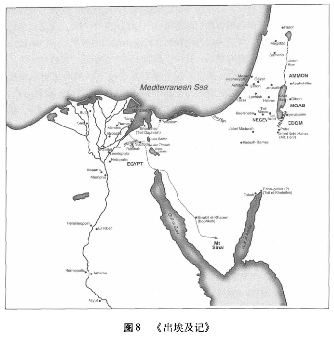
色列民顺服神的时候，他们会展现何谓在神治下的生活，万国将得见神为万民所立的旨意。以色列所有的经历，包括家庭生活、法律、政治、经济，还有日常消遣，都会彰显神的荣耀和神对人类生活所立的最初创世的安排。以色列在神的旨意下生活，乃是见证了神又活又真地与他的子民同在。这是一个如此丰富美满的人类生活，以至地上的万国都被吸引来。⁴⁹这样，以色列将成全亚伯拉罕之约，使万国都得着祝福。以色列忠诚于成为圣洁的国民和祭司的国度这一呼召，以此方式“以色列继续行使她所承担的亚伯拉罕式的角色，以便实现《创世记》12：1-3中的那些应许”50。
神拯救以色列民，并非因为他们配得拯救抑或他们因顺服于神就必得着救赎，而是因为神对他们的慈爱 (《申命记》7：7-8)。但是在他们被解救出来之后，要达到以色列民那将要成为祭司的国度和圣洁的国民的最终目标，他们唯有顺从，过一个顺服于神之统治的、积极的生活。
邓布雷 (Dumbrell)抓住了这个呼召对于接下来旧约历史的重要性：“从此时开始，以色列的历史仅表明了他们的忠诚度；借着忠诚，以色列坚持了神在西奈山给予他们的天职。”51旧约中所余下的部分，叙述了以色列如何忠诚于或违抗了这个呼召。
以色列的天职是在一个盟约的背景下临到他们的，在《出埃及记》19-24 章中，神在西奈山上与以色列民建立了盟约关系。学者们长久以来就注意到古代近东的附庸条约与这个西奈之约之间的相似性。一个附庸条约就是在一个强大的征服者与其控制下的国家之间建立的契约，在摩西时代这就是赫梯国王们管理他们帝国的方式，《出埃及记》中的这个盟约的形式很像一个附庸条约。显然它不是一个平等的条约：神是大君王，以色列是臣属国。这样，以色列便归到神的统治之下，而以色列人就成为了神的子民，这并非因着他征服了他们(就像赫梯国王征服周邻部落一样)，而是因为他使他们摆脱了埃及的奴役。
在赫梯的附庸条约中，有六个主要部分：(1)序文，(2)国王与臣属国之间的关系的历史回顾，(3)规定关系的主要约定，(4)详细的约定，(5)对盟约的见证，(6)对服从的祈福和对违反的咒诅。这每一部分都能在《出埃及记》19-24章与《申命记》中找到。⁵²这些文字暗示了神乃是一位伟大的征服的君王——有点像强大的赫梯征服者，但又无可比拟地比他们更加强大。对神的地位的这个比喻，让我们对以色列国如何成为神自己的子民，获得重要洞悉。就像一位征服的君王会严苛地对待一个国家中生活的各个方面，以便使它成为他的臣属国，神也打算用他的律令掌管以色列国中生活的一切方面。神对政治、经济、乃至法律的兴趣，丝毫不亚于古代近东地区任何其他伟大的藩王。
神对他子民生活细微的关心，清楚地体现在神赐予他子民的教导中，这些教导的目的是管理并塑造他们在他掌管之下生活的每一个方面。我们一般将这些教导称作“律法”，而且这种律法对于以色列民来
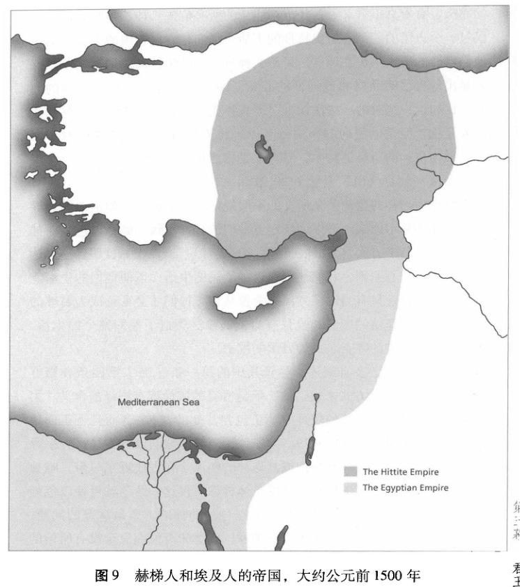
说也不是完全陌生的。当他们还在埃及做奴仆的那些日子，他们早已经经历过足够多的法律。的确，有可能神在西奈山上向他的子民所颁发的并不是完全新的律法，而是利用了他们早先知晓的法律，并改造了它，撤销了一些部分，发展了其他一些部分。这部神叫摩西颁发给以色列民
的律法，有着真正意义上古代近东法律的所有痕迹。神不是呼召他的子民过一个古怪的、没有历史特征的生活：他们是有血有肉的人，生活于他们自己的历史年代和地点。可是，神将通常的法律彻底地改动了，好彰显出他自己的品格和他创世的心意，因此它会有一些与众不同的部分。比如说，那时的一些法律把财产看得比人重要，偷盗所受的惩罚比杀人还重，但是以色列的律法一直以来将人的价值置于纯粹的财产之上，因为在神的所有造物中，只有人是按照神自己的形象造的。
十诫 (就是《出埃及记》20章和《申命记》5章中的“十诫”)是为以色列与神的盟约关系所立的一般规定。从十诫中延伸出来的教导发挥了那些基本原则，详细地规定着他们的日常实践，触及以色列在神面前生活的各个方面 (《出埃及记》20-22章)。所以十诫就明确地表达了神心中的核心原则，它们还要塑造神子民的生活，以便他们的生活能彰显神的品格。只有当以色列民完全遵从神，他们才会真正成为君尊的祭司的国度和圣洁的国民；也只有当神的律法塑造了他们整个的生活，他们才会实现神的呼召，成为万国的祝福。
关于十诫，已多有阐述。尽管其中的每一条 (除了第四条和第五条)都是用否定的方式来表达的，但是所有的诫命都有积极的含义。第一诫不仅在以色列仪礼的敬拜中禁止包含其他的“神”，而且还正面地引导以色列来单单服侍耶和华。第二诫让那时那地的以色列显得异乎寻常，它禁止百姓雕刻耶和华抑或其他神的塑像。在古代近东一带，唯独以色列民没有他们可以俯伏朝拜的具体神像。仅这一命令就可使以色列的邻邦惊诧不已，使得他们提出有关以色列的神的本质最深邃的问题。在当时，哪个民族的圣所中若没有神像，就意味着他们完全没有所信的神。但禁止敬拜偶像却是极端重要的，以色列必须认识到他们的神并不是通常的“神”，而是那位天地的主自己！同样，即使他已经向以色列显明了他自己就是耶和华，但是他们也未被允许使用那名来企图施行异能。因此，第三诫就教导说，应当敬畏主，切不可为了自己的目的试图妄称他的名。第四诫下令要做有价值和必要的工——“六日要做工”——但是，它也牢固地将工作放在百姓和神之间的关系这一背景中，免得工作本身变成目的。
第五诫到第十诫规定了神的子民之间的诸多关系。在健康的家庭结构中，新生的一代要接受引导进入神子民的生活中去。第五诫坚定地宣告了父母的权威和责任。在余下的五“诫”中，神在他所选的民中禁止了杀人，奸淫，偷盗，假见证，以及贪恋。他们的社群当是这样一个社群，其家庭之中的和邻舍之间的生活都满有属天的和平与和睦的平安。
十诫是好消息。它们告诉以色列要如何生活以蒙神的喜悦，并向万国显明了神为人类所设的创世目的。因为耶和华就是造物主，所以他的教导也与他造这个世界的方式相符。这在第四诫中显而易见，它将人类做工和安息的模式与神自己在造这个世界时的做工与安息联系起来：他子民的生活就反映了他自己的生活。因此，十诫就是获得一个完备的人类生活的关键；它们的目的当然不在于作为可怕的约束力而叫生活变得困苦不堪。我们必须记得它们首先是向生活在古代近东一带的以色列民颁布的，而我们释义时应当说明这个背景。它们仍然与我们在神面前的生活紧紧地关联在一起，可是我们并不一定要像古代以色列国遵从它们那样来应用十诫。在当初，打破戒律是要遭到严格的刑罚的：举例来说，无论何人跪拜他神，都要被处死。尽管我们从此看到神极端严肃地对待偶像崇拜，但是我们必须认识到，在多元主义的21 世纪的背景之下，按照这种方式去立法是很不明智的。同样，就如何在我们这个时代实践第四诫 (守安息日)而言，基督徒们自己也有不同的做法。
在20：22 至23：33 中，在基本的命令之后就是许多周详备至的规定。这些要处理各种各样的主题，诸如敬拜、奴隶制度、侵犯人身、拐带人口、性侵犯、经济活动、宗教节日和保护动物，还有许许多多其他的典章，神的子民的整个生活都在神统治的范围之内。这些律法的内容的广泛真是令人惊讶，以23：5为例，如果你认出你所恨之人的驴，而且这驴压卧在重驮之下无法起身，你不可佯作不见，而务必要帮助它站立起来。我们很容易就与我们的邻舍起争执，律法意识到这个现实情况，从而表现出对动物福利的真正关心；神并不幻想他的子民是完美无缺的。
在《出埃及记》24章中，以色列民承诺要遵从盟约，并用一场仪
式作为立约的凭据。摩西诵读了以色列民所接受的律法，随后便写下来。接着，他就筑了一座坛，立了十二根柱子，代表以色列的十二个支派。这个盟约包括了神所有的子民，它就像这些柱子一样，将存到永远。最后，摩西将献祭的血一半泼在坛上，一半洒向百姓的身上。罪人要进入神的同在，献祭是必要的。血被称为“立约的血”，这也是耶稣在最后的晚餐时用的短语。这血还意味着关系的严肃性：有这样一种说法，“如若我们违反了协议的这些条款，就让这一切临到我们吧，就让我们自己的鲜血喷涌而出吧”。凭据性的仪式结束之后，七十位长老和摩西、亚伦、拿答还有亚比户一起往山上去 (24：9-11)。在那里，他们有了一次特别的经历，因为他们得蒙允许而看见“以色列的神”。这一独特的经历极度地证明了与神的关系，而这一关系乃是盟约的核心。正如圣经中其他有关人“看见”神(神的显现)的描述一样，这段经文并没有告诉我们神自己的显现，因为没有一个人得见他 (比较33：23；《约翰福音》1：18；《约翰一书》4：12)；经文却围绕着属神之人的所见，描述了某些事物——这个例子所描写就是在他脚下的道。盟约的中心，即神与神子民的联合，在《出埃及记》24：11 完美地实施了：这些长老看见了神，他们又吃又喝。神曾经应许了与他子民的一种关系，如今在这里，我们看见那应许正在逐步得以实现。
神与他的子民同住
尽管长者们只看到了神才一会儿，但神实实在在地意图他的同住永远地成为以色列生活的一部分。他命令摩西从以色列民中收集材料，用来建一个结构复杂的帐篷，即帐幕，接着他为帐幕的建造提出了许多细致的要求。以色列的仪式性的敬拜生活就要在这里进行，由祭司和利未支派负责，他们主持以色列民的献祭与供奉。可是，帐幕最主要的特点在于它是一个可以移动的圣所，是在神所立约的众民之中其个人的居所：
我要住在以色列人中间，作他们的神。他们必知道我是耶和华他们的神，是将他们从埃及地领出来的，为要住在他们中间。我是
耶和华他们的神。(29:45-46)
《出埃及记》中几乎有三分之一的篇幅讲到建造帐幕的详细计划，然后在它实际被建之时，这些细枝末节又被重复一遍。正如弗雷塞姆(Fretheim)注意到的：“有13 个章节与帐幕有关，且冗长没有故事，读来真会令人厌烦。”53可是，这些详尽的细节却体现出一个重点：像这样的居所是不能掉以轻心的。神亲自来住在他的子民中间，当然是值得停下来好好查看他这正式的居所的形式和本质啊。这个故事的“拖延”，还有一个理由是，敬拜神是以色列的全部。《出埃及记》绘制出了这个国从为奴走向崇拜的整个过程的一幅图，而那大君王的仆人们想知道他在他们中间生活的各个细节。曾经，他们在埃及遭强迫去为法老而建造；如今，他们自愿献出他们的材料和技术，为要在他们当中建起神的住所。
《出埃及记》有两次对帐幕的描写，进一步的原因在于在这两次的叙述之间，记载着一段民众违抗神和神的仆人摩西的事情(《出埃及记》32章)。这次叛离的动乱威胁到了盟约关系本身。摩西正在山上与神说话，而以色列民在等摩西下山。就在神命令摩西如何建造他的居所之时，他们渐渐地失去了耐心，便为他们自己造了一只金牛犊。牛犊之像在那时的古代近东一带是颇为流行的。他们建此金牛犊是把它看作一个完全不同的神抑或是耶和华之使者的像；无论哪一种情况，这件事都是一个灾难性的错误，可与亚当和夏娃在《创世记》第3章中的悖逆相提并论了。造这只牛犊，完全与神命令摩西造帐幕之时他亲自的显现背道而驰：(1)百姓试图制造神已经或将要提供给他们的东西。(2)造这座像的想法是人倡议的。(3)这些材料是在命令之下收集起来的(而不是自愿奉献的)，这让读者想起了在埃及那会儿还做奴隶时的旧生活。(4)这是一件性急的人类之作，它缺乏那与以色列的独一圣洁的神相一致的细心的预备。(5)耶和华，这位不可见的圣洁的神，变成了一个既不能开口又不能行动的、肉眼可见的东西。“‘造金牛犊’讽刺性的结果是，百姓期盼着神的同在能更加地与他们紧锁在一起，可现在他们丧失了它。”⁵⁴于是以色列民违背了神的第一个和第二个诫命。
只是因为摩西 (以神自己的信誉与承诺为基础)向神呼求，结果才避免了大毁灭。那第二次对帐幕细枝末节的描写 (在金牛犊的故事之后)，表明了神满有恩慈地忠于他与以色列所立的约。
《出埃及记》收尾了，最后神来到他的帐幕中并住在那里 (40：34-38)。神过去向以色列几次偶尔地显现，已经让位于他在他们当中永恒的同在了。现在，他们去到哪里，帐幕就跟着去到哪里；神一路与他的子民同行。可帐幕所暗示的比上述多得多：它象征着完全复原了的、神与他一切受造物的同在，正如他起初的心意一样：
在充满喧嚣的茫茫旷野里，有一处细小而幽寂的地方，在那里，将要有新的创世出现！纷乱之中，却有秩序。帐幕就是神所立的这个世界之秩序在以色列的缩影。圣所中的祭司从事着他们例行的安排，就像万物演绎着各自仪礼式的服侍——太阳，树木，还有人。以色列的众百姓在他们中的帐幕周围小心翼翼地安营扎寨，这意味着神叫这个世界重新恢复到起初意愿它们之所是的开始。帐幕实现了神在历史之中那造好的秩序，二者都彰显了神在他们当中的荣光之耀。
而且，这造物之中微观的世界，乃是神宏观努力的开端。在这个民族当中，并借着他们，神正进行着对一切的全新创造。神住在帐幕中，宣告他要与整个世界同在的心意。在那儿焕发着的荣耀，将涌向这更大的世界中去。尾随着这从天而来的荣光的滋润，摩西的脸上闪耀发光……正是这个要成为整个以色列的特征；这光向外而射，直入这更大的世界，这是神与以色列同居而住之尊荣的果效。作为一个祭司的国度……他们要承担起这中介的职分，将这荣耀导向整个宇宙。55
随着《出埃及记》的故事接近尾声，神子民的形成已取得相当大的进展。他们与神正式的盟约关系得到了建立，而且他们还拥有了律法和帐幕。他们的生活也已经有了伦理的和礼仪的形式。⁵⁶如今他们所需要的，就是一个属于他们自己的地方。
然而，要叫神住在这民当中，并不是件容易或直观的事情。这些有罪的凡人该如何应对在他们中间那令人敬畏又圣洁的神呢?在金牛犊事件之后，神的确向摩西启示他自己是有怜悯有恩典的神，不轻易发怒，并有丰盛的慈爱和信实，为千万人存留慈爱，赦免了我们的软弱、过犯和罪恶 (34：6)。但是他还说，他不会视有罪的为无罪，必追讨他的罪。事实上，这民的罪和罪的后果将一直回荡，直到三四代。
《利未记》：与圣洁的神同住
正是在此处，《利未记》适时出现了。整个《利未记》都是关于如何保持与神的正确关系的礼节仪式，而神那君尊的居所就在以色列人的营帐内。《利未记》前七章处理的是以色列人能带到帐幕中的各种燔祭与供奉，以及这些仪式的流程。举例来说，若有人不经意犯罪，就该带赎罪的供物进到帐幕中，在那里献上为祭。通过这样的行动，表明当事人的悔改，就会得到神的赦免(《利未记》4：27-35)。若有以色列人为一些事想要向神感恩，则应该献上平安祭(7：11)。《利未记》第8章和第9章，记述了被神指定在帐幕中工作的那些人，该如何被授予圣职并开始他们的事奉。就这样，神在与他的子民同住之时，仁慈地提供了一个纷繁复杂的机制，好维护他和他们之间的关系。
神的同在出现在帐幕中，他的同在也在以色列民于帐幕里进行有组织的敬拜时，出现在一个特定的地方。“神挑选了地点，因神已经进入到一个民族的历史中来，而地点对于这个民族而言是很重要的。”⁵⁷帐幕为以色列人的敬拜设定了次序，也“为神圣的临在提供了有形的指引”。⁵⁸但是，这绝不意味着，神的同在要充满他子民的全部生活这一心意有丝毫的减损。神的无所不在便是接下来的章节所关心的；在第10：10，耶和华晓谕亚伦说，在有关牲畜、鸟禽、各种食物与不同疾病等事务上，祭司的职责在于“将圣的与俗的、洁净的与不洁净的分别出来”。
对现代读者而言，像这样规定一个人的生活是异乎寻常的，而要理解所有这些规定最好的方法，已经通过对古代文化如何塑造他们的生活的研究显露出来了。那些对于我们来说是随意而陌生的规定，对当时的以色列人却有深刻的象征意义。戈登·韦纳姆注意到，以鸟禽与牲畜为
例，二者包含的物种中都有“洁净”与“不洁净”之分；所有“洁净”的鸟禽与牲畜都可以食用，然而其中只有一些可以用来献祭：
这种鸟兽界内的三分法，相当于神对人类的划分。他将人类大致分为两大族群：以色列人和外邦人。在以色列人内部，只有一个群体，祭司，可以靠近祭坛，供奉祭品。这与律法对神圣的空间的理解相符；在营帐之外的是外邦人与不洁净的以色列人的住所；平常的以色列人住在营帐内，但是只有祭司可以靠近祭坛，或者进入帐幕之内。
这样的区分是为了提醒以色列人，她具有神之选民的特殊地位。食物的条例不仅让以色列知道她的与众不同，它们也起到强化这种认识的作用……食物的条例象征着以色列人是神的选民，受呼召来享受生活，而外邦崇拜偶像的人大体上都违抗神和他的民，他们面临着灭亡。59
事实上，在以色列的生活里充满了这类象征性的东西。每个星期，以色列都要守安息日，好提醒它到底为何而生活。在以色列，整年都贯穿着固定的节日，节日期间以色列要在神面前停下脚步，纪念和庆贺。逾越节是众多的节日之一，那时以色列都要在神面前回想当初它从埃及的奴役之下得着的解救。另一个主要节日就是七七节 (FeastofWeeks)，是在谷物丰收之后庆祝的。它在《新约》中的名称叫做五旬节 (Pentecost)，因为节日是在第一捆麦子献上之后的第五十天才开始的。神为以色列人设这些仪式，乃是神给他们的恩典，叫他们定期重整生活的中心到他和他为他们所做的一切上 (要了解所列的各种节日，参见《利未记》23章)。
《民数记》：前往应许之地
《利未记》结束之时，以色列民还在西奈山。《民数记》所讲的是他们从那儿启程去到摩押的故事，摩押就紧靠在应许之地的外边了。启程之前，他们按照神的吩咐进行了人口普查，统计各部落中年逾二十并
能够参战的以色列男子的数量。这群曾从埃及领出的奴隶，如今成为了一个有序的整体，他们已经准备好出征应许之地。所有男丁的数目共计60万，这意味着以色列人口总数超过了200万。神曾经许诺亚伯拉罕要为他的后裔成立大国的宏愿，如今以色列表现出正在兴起的这样一个大国的种种迹象。⁶⁰
开始的时候，准备工作进展顺利。《民数记》前十章的记述，充满了做好最后准备的乐观氛围。这种乐观极妙地在神赐给亚伦和他子嗣的祭司的福分中表现出来，这一福分就是神自己要加给以色列的赐福：
愿耶和华赐福给你，保护你；
愿耶和华使他的脸光照你，赐恩给你；
愿耶和华向你仰脸，赐你平安。(6：24-26)
在希伯来文中，每一行的祝福都比上一行来得长一些，而最后一行以“平安”作结。他们有完全乐观的态度，认为朝着应许之地出发正是以色列之征途的目标，而且他们的神亲自与他们同行，给他们开道。
糟糕的是，这种乐观情绪很快就被消磨殆尽。在旷野中行走并不轻松，尽管有神同在，但是面对新的苦难，很快一些以色列人开始抱怨，直到神再次震怒 (《民数记》11章)。火从帐幕城烧出来，焚毁了部分营帐。以色列人只能向摩西求助。只有当摩西介入，为他们的缘故向神呼求时，火才熄灭。但是即便受到如此严厉的警告，以色列人还是常常抱怨，甚至为了饮食少肉大发怨言。而领导关系也出现了困境：米利暗和亚伦渐渐对摩西的领导多有微词，他的婚姻也遭二人闲言碎语 (《民数记》12章)。
然而，在这早期旷野之行的故事中，最大的危机来自以色列人对侦察迦南地的探子们带回的消息所做出的反应 (《民数记》13-14章)。探子们告诉人们应许之地实为丰腴之地，以色列一定能在那里安居乐业，但是那里的居民强壮有力，城邑也有坚固的防御。敌人的强大引起了恐慌，以色列对于神的信心也随之崩溃。他们消沉不满，埋怨神领他们远行只是为了致他们于死地。又一次，靠着摩西从中斡旋，才阻止了神对
他们所有人的毁灭。神住手了，但发誓说这些不信之辈无人能进入应许之地。结果是，以色列民没有直驱而入进到那地，而是在加低斯的旷野漂泊了40年，直到第一代毫无信心的人全部逝去。
经历了漫长艰辛的40年之后，以色列民被领到了应许之地东面的摩押地 (《民数记》22章)。在那里再一次进行了人口普查，统计新一代的以色列民 (《民数记》26章)。约旦河以东的地区被攻占了，几个支派瓜分了那些土地(《民数记》32章)。至此，以色列已经做好准备，要拿取位于约旦河对岸的应许之地作自己的产业了。
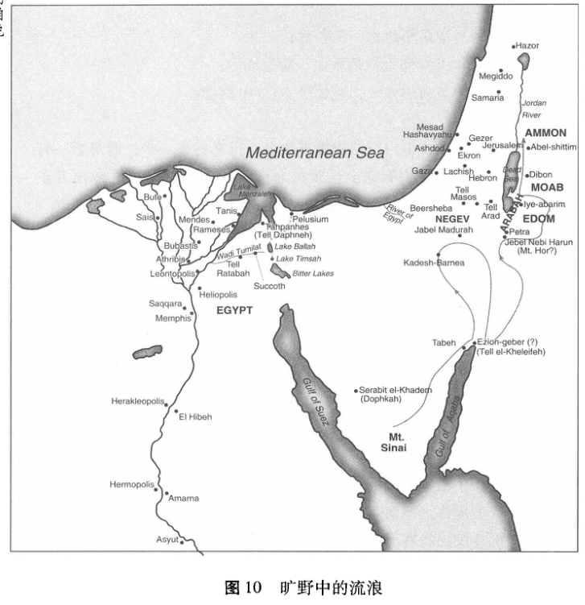
《申命记》：在那地的边界上
毫无疑问，即使对新一代的以色列人来说，要达到神的盟约的标准也不是一件容易的事。应许之地就在前方，在那里有安息的可能，有实现神对亚伯拉罕的应许的可能。《申命记》记载了以色列民正准备进入那地之时，摩西训众讲道的内容。摩西自己不能进入应许之地，但是我们看到他的讲话被记载在《申命记》中，为要让百姓做好迎接新任务的准备：
他们当下就在那地之外，随时可以进入。在驻足而立的那时刻，在神圣的祝福展现于他们面前的这一可能性中，潜藏的是该卷书戏剧性的伏笔。以色列处在一个面临抉择的时刻⋯⋯按照他们与神所立的约，从他们兴起的最初到出征的末尾，都存在着一个最直接的挑战，就是住进应许之地。⁶¹
在这个背景下，摩西的训道向以色列人描绘了一幅图景，即一个在神的绝对权威下建立起来的社会和一个与神立约而注定归顺他的民族。现在，这个盟约得到了更新。
在第一次讲道中 (《申命记》1：6至4：40)，摩西回顾了以色列离开西奈之后刚刚过去的这40年历史，劝诫现在的这一代以色列人从他们父辈的经验里吸取那沉重的教训。以色列民族将来在应许之地的幸福生活，取决于他们发自内心对神的爱和侍奉。在第二次讲道中，摩西详尽地向民众复述了盟约中极为重要的律令，并扩展了它，将它与以色列民将来在那地的生活联系起来。他向以色列人重申了十诫，接着强有力地演说道，敬爱神就要遵守这些律法，并无条件地将其放在自己及子女的生活的首要位置：
以色列啊，你要听！耶和华我们神是独一的主。你要尽心、尽性、尽力爱耶和华你的神。我今日所吩咐你的话都要记在心上，也要殷勤教训你的儿女。无论你坐在家里、行在路上、躺下、起来，
都要谈论。也要系在手上为记号，戴在额上为经文；又要写在你房屋的门框上，并你的城门上。(6：4-8)
神想要引导以色列人生活的方方面面。只有这样他们才能真正成为万国的亮光。“没有生活的哪一个丝毫的方面，神不指着它宣告说，‘这是我的！’”⁶²宗教不只是私人的事务：神要他的律法 (torah，即“教导”)渗透到他子民的经历的点点滴滴中去。他的话语要引导每个人的个人生活(要存在于意识和心智中，无论是醒来还是躺卧都不遗忘)，⁶³塑造他所有的子民在生命中的每一天所想所为 (“带在额上”与“系在手上”)。“律法对家庭生活和公共生活都作出了要求；每当离开住宅的时候，人要看一看写在大门上的神那教导的话，每当归回之时，人要把书写在房门上的那些话再看一遍。
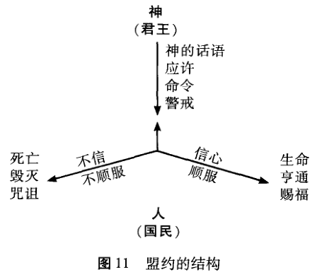
《申命记》中那些详尽的律法规定，全都是关于如何使这一图景成为现实的方法。“在盟约中，宗教和政治是浑然一体的。以色列凭借对耶和华的忠诚，履行了它的政治义务，这有着完整的社会维度。不仅有神学意义上的土地的恩赐，而且还有一个如何保有那地的远景。这远景写在了律法之中，律法将耶和华之治从概念层面落实到特定的事件上去了。” 65
现代的圣经读者往往认为，将其他国族从应许之地上驱逐出去的命令,着实令人难以接受 (《民数记》33:50-54;《申命记》7章)。但是,我们应该注意到，圣经故事在这部分绝非无视以色列通过征战而夺取其他民族的居所这一行为所固有的非正义性。根据《创世记》15：16 的叙述，神一开始并没有从它最早的居民那里拿走土地，直到他们罪孽满盈，才导致他们丧失了对土地的权利。尽管权利将要被剥夺，可神的审判却不失公义。事实上，迦南人的品行早已堕落至深渊，当以色列民真的要来着手施行审判之时，其实已是延误久矣。因为以色列人必须将自己完全委身于神，相邻的其他民族的不同文化和对不同神明的崇拜，都会对以色列人的信仰造成偶像崇拜的持续诱惑，并渐渐地破坏以色列作为神立约的百姓的身份。这就是为什么在《申命记》(如7：5；比较《民数记》33：52)中，神让以色列人代替应许之地的原住民的命令，某种程度上是第一诫的应用：“除了我以外，你不可以有别的神。”66
因此摩西就提醒以色列民与神所立的约，以及它对于他们在那地的全部生活所暗含的意义。在他们面前，摩西给了两个将来的结局：审判或者祝福 (《申命记》27-28)。如果他们用信心和顺服来回应神的话语，那么他们就会经历到生命、兴旺与祝福。一旦他们不信或悖逆神的诫命，那么他们就会面临死亡、毁灭和咒诅 (30：11-20)。摩西催促人们为了生命和福分孜孜追求顺服于耶和华，接着便更新了与他们所立的约，还委派约书亚做他的继任者。尽管神让摩西看到应许之地，却不允许他进入。最后，摩西在迦南边境逝世，《申命记》告终。
第二场：一块赐于他子民的地
《约书亚记》：所赐之地
《约书亚记》讲述了以色列人在约书亚的带领下征服迦南的故事。以色列人出埃及时是奴隶，对于这样一个民族来说，拥有一块属于他们自己的地是其历史向前跨出的重要一步：“当时，以色列确实获得了新生，从奴隶变成了后嗣，从无依无靠的孩子变为成熟的继承人。”⁶⁷虽然以色列人经过几次战争才征服迦南，但圣经上的描述到处都在强调以色
列人乃是完全靠着耶和华才取得胜利的。的确，这块地是耶和华的恩赐，是耶和华在兑现他对亚伯拉罕、以撒、雅各和摩西所作的应许。耶和华亲自吩咐约书亚做好准备，带领以色列人渡过约旦河，进入他所要赐给他们的那块地 (《约书亚记》1：2-3)。约书亚得着鼓励要刚强壮胆，因为耶和华将赐以色列人地，从而兑现他对以色列先祖所作的应许(1:6)。
约书亚往那地派出探子，为征服作准备。摩西40年前也向迦南派出过探子，但那些探子带回的情报中充斥着恐惧，而这回情况不同了(《约书亚记》2章；参见《民数记》13章)。探子们在一个叫喇合的妓女家躲过了耶利哥国王的追捕。喇合向探子们讲述了耶和华的名如何甚至传到了迦南，从而引发了当地居民的恐惧。喇合要探子们向她保证，以色列人一旦攻克迦南，必会善待她和她的家人。探子们回到约旦河东岸，以色列人收到他们带回的好消息，便受到鼓舞，开始向自己的新家园进发了。约柜带着他们渡过了约旦河，约柜止住了水流，叫他们得以通过。他们从河底取了12块石头，就在迦南边境内立了一个纪念碑，以提醒以色列人不要忘记，正是耶和华使他们渡过河去占领了迦南。
这个征服是耶和华的作为，在耶利哥附近一条河的西岸发生的一件事情形象地说明了这一点：一个天使站在约书亚面前，手里拿着一把刀。约书亚问他是哪一边的时，天使回答说：“两边的都不是，我来是要作耶和华军队的元帅”(5：13-15)。天使说的话叫人联想起上帝在燃烧的灌木丛向摩西下达命令，天使也令约书亚脱去鞋子，因为他所站的地是神圣的。显然，指挥这场战争的不是约书亚，而是耶和华自己：耶和华就是必将使以色列人获得胜利的那位。
征服耶利哥的有关细节不断强调了这个观点。在耶和华的指导下，以色列人由约柜 (象征着耶和华的临在)带路，围困了耶利哥达七天之久。到了第七天，随着号角声和百姓喊叫声的响起，耶利哥的城墙倒了。以色列人攻占了这座城，并照着耶和华的吩咐杀了城里的一切活物(《约书亚记》6：21)。唯独放过喇合及其家人。
我们认为关于这场“圣战”有几个方面很难理解。杀死耶利哥城的所有百姓及其牲畜，这真的有必要吗?这样做正义吗?关于这些我们
下面会进一步讨论，现在只需指出上帝对以色列人下达了明确的指令，他们必须这样战斗。事实上，他们首次进攻 (就是刚打败耶利哥之后)艾城，就遭到了彻底的失败，是因为他们中出了一个叫亚干的犹大族人，这个人背叛了上帝的旨意，私自留下了一些从耶利哥掠夺而来的物品供自己使用 (《约书亚记》7章)。这种背叛被看作是相当严重的，因此亚干被石头击毙。之后，以色列人顺利地攻占了艾城 (《约书亚记》8章)，不过这一次上帝允许他们劫走艾城的牲畜和其他物品——耶和华就是这样吩咐约书亚的。亚干先前在艾城所犯之罪带来的问题，提醒以色列人不要忘记，只有顺从耶和华，遵守与他所立的约，才能顺利地占领那地。
攻克艾城后，约书亚履行了摩西在《申命记》27：1-8中的命令，他再次确立了耶和华与以色列人在以巴路山所立的约 (《约书亚记》8：30-35)。以色列人聚集在约柜的两边，一半对着基利心山，一半对着以巴路山。约书亚将律法抄写在石头上，并在仪式上向以色列人宣读，以便他们清楚地认识到摆在其面前的关于祝福与诅咒的选择。上帝必赐以色列人地，好叫他们在那里生活，做他的子民，从而成为万民的光。但 (正如他们将会付出代价而认识到的那样)他不会容忍以色列人过着与他自己的品格根本相抵触的生活。
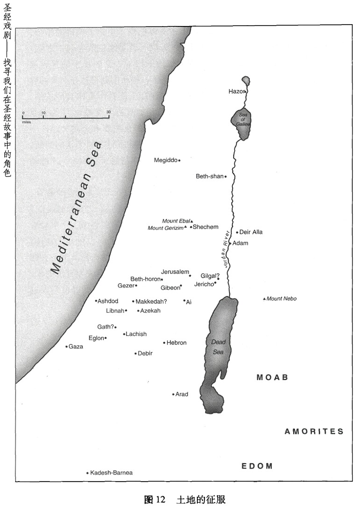
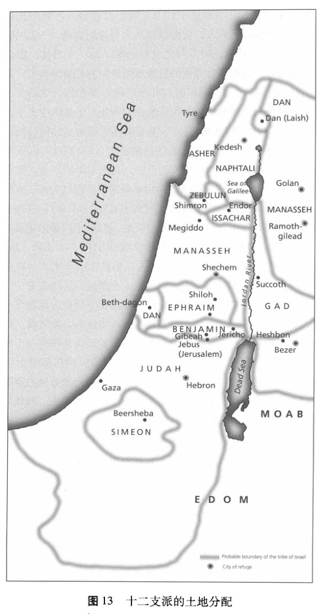
《约书亚记》9-12 章讲述了约书亚带领以色列人占领全地的战斗故事。基遍人欺骗以色列人，使得以色列人与他们立约 (《以书亚书》9章)，不过，他们是以色列人与之立约的唯一的一个群体。以色列人占领整个迦南后，就把那里其他的民族连同他们的首领都杀了。战争的最后，圣经总结道：“约书亚照着耶和华所吩咐摩西的一切话夺了那全地，就按着以色列支派的宗族将地分给他们为业。于是国中太平，没有争战了”(11：23)。《约书亚记》13-19章讲述了那地是如何分配给以色列的各个支派。每个支派的产业通过拈阄确定 (14：2-3)：九个半支派分得约旦河西岸的产业，两个半支派分得约旦河东岸的产业。那地还建起了庇护城 (《约书亚记》20章)，用来确保那些因过失杀了人的得到公正的待遇。利未支派分得了城邑 (《约书亚记》21章)，这些人因为是祭司而没有得到属于自己的单独的一块地。但由于约瑟的子孙有两个支派——就是以法莲和玛拿西，所以参于分地的仍有十二个支派 (14：4)。
《约书亚记》的末尾记述说以色列人在那地定居下来了。在上帝对亚伯拉罕所作应许的实现过程中，以色列人在那地定居代表着一个重要阶段，只是这一路走来并不容易。应许给亚伯拉罕后裔的地现在已经在以色列人的生活中变成了现实，这是以色列人生活的必然阶段，以便成为万民的光。面对自己美好造物的背叛，上帝的反应是拣选一个叫亚伯拉罕的人，然后收复部分的土地，让亚伯拉罕的后代在那里生活；⁶⁸以色列在那地的生活乃是要让人体味到上帝对他的整个受造界的意图。
我们再一次被提醒注意到上帝对生命的全方面的关注，如他创造它时那样，布吕格曼 (Brueggemann)肯定地说：“这种与物质的、有形应许相关的关注使人相信基督教是一种唯物主义宗教。当基督教走向属灵方面，否认其对土地的正当关注时，它理所当然地受到了马克思主义的苛评。”⁶⁹普天之下的这块特殊之地是上帝对以色列人的恩赐；约书亚将它描述成“这美地”(23:15; 参见《申命记》6:10-11):
那是一块美地，它是美好的话语所成就的工作……那地与赐下的它的话语相配。它实现了旷野中的一切期望：那里有水——小溪、喷泉、热泉；有食物——小麦、大麦、葡萄树、无花果树、石
榴树、橄榄树和蜜；非常丰盛——什么也不缺……什么都不少……还有矿藏——铁、铜……在这样的地方生活基本不用辛苦劳作，可以过上安定的生活，这是以色列人作奴隶时和寄居他乡时都在渴望拥有的那种生活。⁷⁰
那地犹如第二个伊甸园；正如亚当和夏娃在伊甸园里一样，以色列人是不可恣意开发那地的。以色列总与耶和华共同生活在那里，耶和华的律法包含了许多关于如何正确经营那地的指示。尤其是关于安息日的律法，它有力地提醒着人们，耶和华才是维持一切受造物的那一位，而生命不仅仅只是消费。⁷¹
以色列能应对这样的挑战吗?摆在它面前的是各种伟大而神奇的可能性。约书亚宣布，这地不仅会是以色列人的安息之所，也会是一个考验人和诱惑人的地方；绝对不是所有的迦南人都离开了这地。⁷²以色列人也时常流露出背叛耶和华的倾向；约书亚在世的时候，人们确实还守着约 (《约书亚记》24：31)，但他们在所领受之地上的未来，则取决于他们在约书亚死后选择过什么样的生活。在向以色列众首领发表的告别讲话中，约书亚提醒众人这地乃是耶和华的恩赐，他们未来的福祉取决于他们如何爱他、顺服他。约书亚在示剑召集了众支派，在那里他回顾了以色列人的历史，并且督促他们做出决定，是事奉亚摩利人的神呢还是事奉耶和华 (24：15)。以色列人选择了全心全意事奉耶和华，于是约书亚与他们重新立了约。
很清楚，《约书亚记》乃是圣经故事的一个重要组成部分。如果少了这一部分，以色列就不可能在一个地方形成为一个民族，上帝关于以色列的计划也会受到搁浅。但如前面所提到的，约书亚为现代读者制造了一些麻烦。我们决定如何看待《约书亚记》，这对我们如何讲述整个圣经故事有着重要意义。甚至一些的确把圣经当一个完整的故事来读的基督徒，他们也把耶稣的教训看作与《约书亚记》“圣战”中所阐明的某些观点是根本相矛盾的。许多现代的读者认为迦南人遭大屠杀一事尤其难以接受，他们还认为这种观点与我们当代的道德观实在格格不入。尽管没有人能够彻底解决这个问题，但圣经故事的脉络中还是存在着一
些线索，可以帮助我们明白上帝在约书亚时代向自己的子民下达的指示。73
我们已经知道，对于迦南地出现的邪恶，上帝一直保持着耐心，直到忍无可忍时他才对其中的人民进行了审判 (《创世记》15：16)。《申命记》20：16-18 中写道，以色列人有可能会屈从偶像崇拜，这一危险情况更进一步促使上帝下达了灭除那地全部居民的命令。⁷⁴还有，只拜耶和华 (第一诫命)，这应该是以色列民族的特征。如果以色列住在迦南人当中，就有被诱惑着去崇拜其他“诸神”的危险。“因此，也只有在与异教作全面斗争的情况下，我们才会明白驱赶异教民族这个极端的呼召。《约书亚记》是关于一群人的故事，这个群体人虽少，而且在属灵忠诚度方面到了几乎难以令人置信的软弱和反复无常，但他们却在和那些卑劣、有诱惑性且残忍的强大对手作战。”75今天我们很难理解偶像崇拜，也很难明白偶像崇拜有如此严重的危险性。但是只要记起上帝的神圣，认识到以色列对耶和华的信正处于那么危险的状态，我们就可以很好地理解“杀光迦南地的所有迦南人”这个命令了。
《士师记》：未能成为万民的光
和摩西不同，约书亚作为以色列人首领的地位没有被替代。所期盼的好像是，以色列将会在那些由摩西和约书亚任命的长老的帮助下，直接在耶和华的统治之下生活。政府权力被下放，但以色列在这种支派制度下并没繁荣强大起来。《士师记》讲述了约书亚和他那一代人死后所发生的情况——那是一个不好的消息。
在英国，身穿红色外衣、骑着马、带着一群猎犬去猎狐的传统近年来引发了人们的争论，有人强烈反对，有人坚决赞成。英国国会在对这个问题进行辩论时，议会外边有支持者和反对者在游行示威。反对猎狐的一方喊出了极具影响力、很有节奏感却令人不寒而栗的口号：“太邪恶了，太邪恶了。”《士师记》中也有与这种叠句相似的情况：由于以色列人一次次行耶和华眼中为恶的事，最后耶和华就使以色列人落入他们仇敌之手。“以色列虽蒙上帝拣选，却过于软弱，无法响应上帝的呼召。这种拣选与软弱间的矛盾造成了这不断展开的叙述中戏剧性的张
力。”⁷⁶《士师记》讲述了以色列国各个阶层中呈螺旋形下降地坠入背叛和灾难的故事。
《士师记》一开始就指出，以色列没有把一切迦南人赶出那地(《士师记》1章)。《士师记》2：1-5描述了一个与盟约有关的案例。耶和华因他的子民拒绝与异族的偶像崇拜作斗争而审判他们。判决已定：上帝不会驱赶留下来的各异教民族，他们的神将成为以色列人的诱惑。以色列人依然面临诱惑去事奉迦南原有的“诸神”，他们时常经不起诱惑,并事奉“诸巴力”(2:11-13)。巴力 (Boal) 是一个丰产神,其复数形式 (“诸巴力”“Boals”)表示的不是一些神，而是一个神的几个不同地方性的形式。以色列人不像迦南人那样善于农耕，对于这些新移民来说，迦南人的宗教对他们颇具吸引力就在于它所许下的“肥沃土地和巨大财富”这样的承诺。而且，敬拜巴力还会立马得到肉体上的满足感：
拜巴力不仅意义重大，而且还很有乐趣！巴力崇拜是基于共鸣魔法而进行的，因此，为确保民族人丁兴旺，牲畜成群，庄稼丰收，人们会在当地巴力神庙中与庙妓——无论男女——同房，为的就是激发巴力代表那个人做同样的行为，从而确保生活的各个方面都丰产。”
所以说以色列人的偶像崇拜还有一种不正当的逻辑，但耶和华却没有好感，愤怒的上帝对他的子民进行了审判。
上帝的审判呈周期性，这许多的周期构成了以色列人生活的特征，也构成了《士师记》的特征：(1)以色列人因拜诸巴力和亚斯他亚而犯罪。(2)这种行为违背了盟约，激起了耶和华的愤怒。(3)于是耶和华使以色列人落入他们仇敌的手里。(4)面对仇敌的压迫，以色列人感到沮丧，于是呼求耶和华来拯救他们。(5)耶和华兴起一位拯救者 (一位“士师”)把以色列人从他们仇敌的压迫中解救出来 (2：11-19)。⁷⁸这个模式不继循环，所有一切只会平静片刻，不久 (士师死后以色列人就忘了教训，再次陷入偶像崇拜之中)，整个悲惨的周期就又开始。
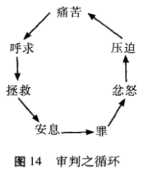
最先提到的“士师”是俄陀聂，他是迦勒(曾经是约书亚的得力助手)的兄弟。由于以色列的背叛，耶和华把他们“交”在美索不达米亚王古珊利萨田的手中 (《士师记》3：7-11)。以色列人服侍这个王8年后，就呼求耶和华，于是耶和华就兴起士师俄陀聂救他们。耶和华的灵降在俄陀聂身上，于是他就把以色列人从古珊王的统治下救了出来。于是以色列人就太平了40年，直到“下一个轮回……”
整本书充斥着一次又一次的背叛，但他们的罪一直加深到“背叛、受压迫、忏悔、获得解救”，这个循环模式变成导致彻底混乱的恶性循环。后续的士师变得越来越有缺陷；以色列人开始放荡、掠夺、杀人(《士师记》19章)。最后，这个民族内部发生了战争，导致分裂。最后一位士师是参孙，至此以色列已经变成什么样，参孙就是一个写照(《士师记》13-16章)。
参孙是拿细耳人，拿细耳人即以色列人中那曾经向耶和华起了“离俗的愿”的，拿细耳人发誓要在一个特定时期戒掉一些东西 (如酒)。拿细耳人的生活有三戒：丰产祭拜 (由葡萄来象征)、共鸣魔法 (sym-pathetic magic)和祭拜死人，这些是以色列人试图向迦南人学习的主要宗教习俗。“因此，对于所有以色列人来说，拿细耳人的离俗就象征着他们该如何过圣洁的生活，不被这些异教习俗所沾污。
参孙终生都是拿细耳人，离俗和圣洁是诸如参孙这样的人所应具备的特点 (13：4-7)。⁸⁰参孙确实为上帝做了一些大事，他用自己超人的力
量把以色列人从非利士人手中救了出来，成就斐然。但是他自己的生活却是一团糟。他娶了一个非利士女人为妻，与妓女混在一起，后来竟要命地迷上了另外一个叫大利拉的非利士女人 (《士师记》16章)。通过大利拉，非利士人发现了参孙力量的奥秘所在——就是他的头发！参孙告诉大利拉说：“向来人没有用剃头刀剃我的头，因为我自出母胎就归上帝作拿细耳人。若剃了我的头发，我的力气就离开我，我便软弱像别人一样”(16：17)。趁着参孙睡觉之际，大利拉剪了他的头发；当他醒来时，力气已经消失了。于是非利士人挖出他的眼睛，把他投入牢房。
但耶和华允许参孙向非利士人复仇。在一次盛宴上，非利士统治者庆祝他们的大衮神力量胜过以色列人 (而且也胜过以色列人的神)。他们命令把参孙带出来，好当众取乐他。不过现在他的头发又长出来了，力气也恢复了。参孙推倒了紧挨庆祝人群的异教庙宇。关于参孙的故事最后结语道：“这样，参孙死时所杀的人比活着所杀的还多”(16：30)，这可谓是一个奇怪的墓志铭。参孙复杂的生活象征着以色列自身所经历的，如下所言：
参孙虽然意识到他为上帝离俗了，但他并没有重视这一点，还要命地迷上了外族女人，加上他的固执、自大，所有这些实际成为一面明镜，反映以色列本身的行为。他的命运也是这样……参孙死了，以色列却没有灭亡，但也没有获救……参孙的悲惨命运不禁使我们发出这样的疑问：在以色列也接受它的离俗这一事实之前，耶和华将不得不使以色列处于怎样的困境呢?⁸¹
《约书亚记》的开头和结尾都写到了战争；书的一开始写到这个民族在进行一场神圣的战争，结尾则写到以色列人在彼此战争。在整篇《约书亚记》中我们可以看到以色列人倾向“任意而行”(17：6；21：25)。到最后的士师参孙时，就连以色列的统治者也习惯于只照着自己败坏的意志行事，在他眼里没有比自己的败坏意志更高的权柄了。在以色列，上帝律法的完美准则已经被遗忘殆尽了。
《撒母耳记》：以色列进入王国时代
需要一个王
以色列之所以迅速陷入混乱状态，《士师记》给出的解释之一是：“那时，以色列中没有王，各人任意而行”(《士师记》21：25)。这样又产生了一个重要的问题：以色列是与上帝立了约的民族，如果以色列想要有果效地作为神的盟约之民而生活，需要怎么样的首领 ?82以色列需要一个王吗?当然，从一个重要意义的角度说，以色列确实已经有了一个王，就是耶和华！但要一个人来做首领的话，什么样类型的首领能确保以色列永远信靠耶和华?
《撒母耳记》上下两册一开始讲述的是一个不育女子以及一个不育的民族。女人叫哈拿，和当时受仇敌压迫的所有以色列人一样，哈拿也大声呼求耶和华除去她不育的耻辱 (《撒母耳记上》1章)。以色列民族没有结出顺服上帝之约的果子，从这个意义上说，这个民族同样也是不育的。甚至以色列对上帝的祭礼敬拜也被败坏了，失去了其对上帝之圣洁的代表意义。祭司以利 (Eli)的众儿子非常以自我为中心，完全不“认识耶和华”(2：12)。以利的一个孙子取名“以迦博”，就是“荣耀已经离开”之意，当时形势的严峻就很好地表现在这个名字中了(4：21)。上帝临到以色列人中间，这是以色列民族的真正荣耀，但当非利士人掳去了约柜之时，这份荣耀实际上也离开了以色列人。
这个“约柜”是一个装饰非常高级的木盒，存有一份十诫 (TenWords)的抄本，象征上帝亲自临到自己的百姓当中。以色列人已经开始把它当作神奇的符咒，仿佛一旦他们受到仇敌的威胁，约柜就会显灵，上帝就会来帮助他们。每次以色列被非利士人打败后，他们就会在下次战斗中带上约柜，以便赢得胜利。然而，以色列人没有取得胜利，反而全军覆灭，三万人被杀，约柜也让非利士人掳去了。在这次溃败中，以利的两个儿子都被杀了，以利本人听到这个噩耗后在震惊和悲伤中死去。
上帝心意中的王
以色列确实不育。虽然这个民族没有在那地消失，上帝却离开了它，到以色列的仇敌当中生活去了！于是，以色列唯一能指望的，就是祈求上帝将他们的不育变成新的生命，并回到他的子民当中。后来上帝真的回到了以色列人当中：约柜在非利士人当中的出现，给非利士人带来了如此的灾难，以至他们十分乐意把约柜还给以色列 (《撒母耳记上》5-6章)。同时，上帝回应了哈拿的祷告，他使哈拿有了生育能力，同时又叫以色列人摆脱了对属灵品格的缺乏。上帝赐给哈拿一个儿子撒母耳，他是最后一个也是最伟大的“士师”。与参孙一样，撒母耳也是拿细耳人 (1：11、24-28)。与参孙“不同的是”，撒母耳是一个正直的人物，他是一个有超凡魅力的首领，他勇敢地把以色列人从其仇敌手中解救出来，巧妙地化解了以色列人之间的矛盾。“撒母耳平生作以色列的士师，他每年巡行到伯特利、吉甲、米斯巴，在这几处审判以色列人”(7：15)。撒母耳既是士师，也是祭司。他所说的话一句也都不落空 (3:19-20),他过着正直的生活 (12:3-4), 因此也被尊称为先知。
撒母耳与摩西也有某些相似之处，因为他也告诫以色列人要抛弃偶像，用心事奉耶和华 (《撒母耳记上》12章)。不过，上帝赋予撒母耳的重要使命也许就是膏立国王。虽然撒母耳老了的时候，立了自己的儿子约珥和亚比央为士师，但事实表明，他们不太像自己的父亲撒母耳，倒很像是以利的儿子。于是以色列各支派的首领来见撒母耳，求他立一个王, “像列国一样”(8:1-5)。
这短短数语在撒母耳、上帝以及以色列的众长老之间引起了激烈的争论，因为由谁统领百姓这个问题，对于以色列的真实身份来说，是极其重要的 (《撒母耳记上》8章)。如果以色列将成为万民的光，为他们带去祝福，那么以色列就必与它们不同。但以色列想要一个王，这就好像它想与列国一样。撒母耳向耶和华诉苦，耶和华就吩咐他向以色列人警示君主制的危险性 (8:11-18;参见《申命记》17:14-20)。但以色列人态度很坚决：他们要一个统领他们、带领他们在战场上取得胜利的王。作为与上帝有约的民，他们丝毫没有流露出想要更加顺服上帝的意
思。最后，耶和华让撒母耳只管依从以色列人的话，为他们立王。不过这个王还是得由上帝来选，他指示撒母耳膏立扫罗作以色列的王。
虽然圣经没作出详细的说明，我们还是被告知说，撒母耳向以色列人说明了“国法”，又将其书写下来，置于帐幕中，放在耶和华面前(《撒母耳记上》10:25;参见《申命记》17:18-20)。由于撒母耳从上帝那里领受的预言式的信息，制约了以色列人的国王梦，以色列的王权统治 (若照原计划的那样)并不与盟约相违背。对于正在以色列萌芽的王权统治来说，撒母耳的预言家身份显然是被安排来提供一个起约束和平衡作用的制度。因此，尽管王权统治有不少独断专行的危险，却不会对盟约构成威胁。预言与王权之间的斗争，属灵目标与政治理想之间的斗争，这些构成了随后以色列历史的特征，直至以色列亡国。
为维护以色列特有的本质，以色列君主制的一个重要方面就是建立明确的王权神学。在扫罗及其继任者大卫的情形中，耶和华是王的拣选者，他先吩咐撒母耳膏立扫罗，后又赐圣灵在扫罗身上。唯有这样，王才能够在以色列面前公开确立其身份。这样，世俗的王就完全确立了，他是伟大的上帝耶和华统治下的王。先知撒母耳膏立以色列的王之后，那位世俗的王就成了耶和华的弥赛亚 (就是“受膏者”；《撒母耳记上》2:10; 10:1; 16:13)。
未来对弥赛亚的盼望便会建立在这个比喻之上，如邓布雷一针见血地指出：“旧约末世学一贯如一地总结以前救赎史的要旨，将之视为未来盼望的具体形式。”⁸³由于旧约诸王与即将到来的弥赛亚之间存在这样的联系，君主制在以色列具有什么程度上的积极意义，这成了一个很重要的问题。一些学者，如古丁盖伊(Goldingay)，认为《撒母耳记》(上、下)对王权统治持否定态度：“故事已经清楚地表明，政府的外部标志的重要性最多只能说是模棱两可的，这个阶段上帝与以色列交往的动力存在于先知当中，而不存在于政府的官方机构当中，流亡这一历史事件，对以色列与其他各国一样的王国时代，作出了彻底否定的结论。”84但我们认为，将健康的王权统治机构 (《申命记》17：14-20 提到这种机构可能是合法的)与该机构的不当使用或误用相混淆是危险的。上帝最初对以色列的应许之一，便是它会成为一个伟大的民族国家，而
强有力的政治领导则是成为一个国度的重要因素。
扫罗是一个不忠的王
扫罗统治之初，以色列人还不习惯有一个王，因此扫罗一开始所起的作用很像个士师。唯在他给雅比解了围，救出雅比的百姓后 (《撒母耳记上》11章)，众以色列人才开始接纳他这个王 (11：14-15)。在扫罗的带领下，以色列人在与非利士人的战争中获得了巨大的胜利。然而，尽管扫罗有年轻人的雄心壮志，但他对上帝的不忠几乎从一开始就已经为他的生涯埋下了阴影。在扫罗统治之初，当他还在为进攻非利士人作准备时，就变得没有耐心了，不愿等撒母耳来把上帝的祝福带给他(《撒母耳记上》13章)。因此，他擅自代撒母耳履行了祭司的职责。撒母耳到后就指责扫罗，并预言说，王国将从扫罗的手中被夺去。后来，扫罗照着上帝的吩咐对非利士人发起了战争，但他却无视上帝的明确指示，竟在洗劫了敌方的营地后将敌方的牲畜当作丰盛的祭品献给上帝。于是撒母耳再次来到扫罗王跟前，提醒扫罗不要忘记，上帝要的是顺从，不是祭品：“悖逆的罪与行邪术的罪相等；顽梗的罪与拜虚神和偶像的罪相同。你既厌弃耶和华的命令，耶和华也厌弃你作王”(15：23)。扫罗在强行向上帝要祝福的时候，实际上丧失了上帝的祝福。
有一段时间扫罗依然在王位上，但撒母耳立即物色新国王，他膏抹了来自伯利恒的一个叫大卫的年轻人。从那一刻起，扫罗就变得越来越反常，大卫获得美名，扫罗失去威望。圣灵临到大卫身上，却离开了扫罗 (16：13-14)。大卫是个杰出的乐师，他在扫罗精神陷入混乱期时给了这位王许多宽慰，但后来却成了扫罗这位长者发泄恶意和躁狂的目标。大卫打败了歌利亚和非利士人，这引起了扫罗的注意，扫罗的儿子约拿单成了大卫忠实的朋友，大卫娶了扫罗的女儿米歇尔为妻。但大卫作为一个军事统帅的声望与日俱增，最终招致了扫罗的妒忌。听到众以色列妇女唱“扫罗杀死千千，大卫杀死万万”后，扫罗再也无法容忍了，他想要杀害大卫。(18：7-11)。于是年轻的大卫被迫带领一群被逐放者出逃，成了逃亡者。但是上帝在祝福大卫，他打了一系列的胜仗，昌盛起来。虽然这个时期大卫有过许多次杀扫罗的机会，但他并没有对
“耶和华的受膏者”下手 (参见24：6)。
扫罗在位四十年，在这期间他曾数次派人刺杀已获任命的那位后继之君，但都失败了。上帝的沉默使扫罗感到绝望，于是他甚至求问女巫如何应对来自非利士人的威胁 (《撒母耳记上》28章)。最后，在面对非利士人就要打败他自己的军队之时，扫罗自杀了(《撒母耳记上》31章)。
对于以色列的君主制来说，这并不是一个吉利的开端。扫罗的邪恶历史表明，世俗君主制对以色列而言是极为危险的。尼尔森 (Nelson)说，“上帝与扫罗的关系始终让人非常难以揣摩，读者也是弄不明白上帝的动机，正如扫罗那样。”⁸⁵但有一点很清楚：上帝需要一个听命于自己的王，这个王一方面能够强化并促进他对以色列的绝对统治，另一方面也有助于以色列人不辜负盟约的要求。正因为如此，上帝非常果断地处置了以色列第一位世俗国王的悖逆。
《撒母耳记上》关于扫罗之死的故事，《历代志上》的记叙部分一开始也提到了 (第10章)。事实上，《旧约》中分为两册的书卷(《撒母耳记》、《列王纪》和《历代志》)有三处分别提到了王权统治的起起落落。从扫罗之死这个故事起，《历代志》所涵盖的内容与《撒母耳记》、《列王纪》一样。通常认为：《撒母耳记》与《列王纪》专门进行单独的、渐进式的描述，《历代志》则显然是个独立的部分，不过它确实涵盖了大部分相同的内容。在《旧约》故事的这一处，我们好像对这一时期的历史拥有两种观点。这在圣经中并不少见：《福音书》对耶稣的生活和工作有过四次描述。我们不应该认为这是令人不安的，所有的历史记载都是有选择性的，取决于作者的意图。例如，《列王纪上》回顾了君主制的起起落落，为的就是向遭流放的以色列人解释以色列是如何流亡到巴比伦的。《历代志》成书于《列王纪》之后大约一百年，大约在第二圣殿修建时期，它所讲述的故事的历史焦点落在更早时期的第一圣殿以及对上帝的崇拜之上。《历代志》最后讲到居鲁士关于修建第二圣殿的命令 (在这方面它比《列王纪》更有超前意识)。《历代志》还作了进一步回顾，用了九个章节的家谱来证实以色列与亚当是有联系的，继而与上帝关于其全部造物的旨意联系在一起。在希伯来文圣经中，《历代志》是最后一卷书，它讲述的故事以亚当为开端，这也
许是为了叫我们想起圣经中的第一卷书：“《历代志》作者热切地断言说，上帝在创世当中的各种旨意乃是通过《旧约》中的以色列而得以实现的。” 86
大卫是个忠实的王
扫罗与约拿单死后，大卫王朝和扫罗王朝之间就爆发了战争，但大卫一方的力量在稳固地增强。犹大 (以色列的南部)首先选择大卫为王 (《撒母耳记下》2：1-7)，然后全以色列人认可了这一选择 (5：1-4)。后来，大卫又打败了非利士人，从而开始巩固了自己的统治。他把上帝的约柜带到了耶路撒冷，这后来既成为大卫自己住的城，也是上帝用来住在自己子民当中的固定居所。大卫还在耶路撒冷建了自己的宫殿，后来也想要为耶和华建一个家。但先知拿单告诉他说，那不是大卫而是大卫的儿子、王位继任者要做的事。耶和华确实巩固了大卫的王位，还许诺实现大卫及其继任者们对以色列的王权统治。
在与大卫所立的约中，上帝应许：(1)大卫的名变得伟大。(2)为他的子民以色列选定一个地方，“栽种”他们，使他们安全。(3)叫他们不受仇敌骚扰。(4)必坚定大卫的国位。(5)使大卫的儿子建造上帝永恒的“殿宇”(《撒母耳记下》7章)。大卫盟约的前三项特意让人联想起亚伯拉罕盟约。在以感恩和敬拜来回复上帝时，大卫将上帝对他本人所作的应许与很久之前上帝对亚伯拉罕的应许联系起来 (7：18-29)。大卫盟约的新内容是：王权被移植到了西奈盟约中。如今，以色列正式成了王国；作为一个王国，以色列现在要践行它的呼召，作为一个王国来作万民的光。以色列的人间国王将使以色列成为一个圣洁的民族、祭司的国度，他做到这一点的时候就是当他取缔那地的偶像崇拜行为、赐以色列宁静和平安的时候。
起初，当大卫坐在王位上时，以色列过上了宁静、和平的生活。随着大卫在军事上取得巨大的胜利，以色列的边境也安全了。大卫作“以色列众人的王，又向众民秉行公义”(8：15)。他获得了很大的胜利，他搜寻扫罗的亲戚，但没有 (如人们本可能会期望的那样)杀他们。相反，他对他们施恩，如他向约拿单的瘸腿儿子米非波设归还了其祖父
扫罗的财产，并邀请他到自己的家中。
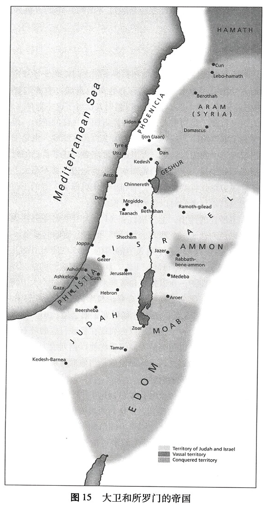
然而，大卫并不是一个连一点罪过都没有的完人，流传下来的《撒母耳记下》对他所犯的罪和判断错误做了罗列。大卫与拔示巴通奸，后又密谋杀了她丈夫。但先知拿单知道了这件事，他向大卫讲了一个寓言故事，故事的结局包含着真正的讽刺(《撒母耳记下》11~12章)。他对大卫说，一个富人有许多牛群羊群，一个穷人除了所买来养活的一只小母羊羔之外，别无所有。有一客人来到这富人家里，富人要招待客人，但他却蛮不讲理地杀了穷人家的羊羔(而不是杀自己家的羊羔)。听到这个如此贪婪、不公的故事，大卫很是恼怒，他发誓要严惩那个“富人”。突然拿单对着大卫说，大卫本人就是故事中的那个“富人”。他霸道无理，贪婪地把别人的妻子占为己有。这个故事令大卫知罪，于是他在上帝面前为自己所犯的罪痛哭、忏悔，并获得了上帝的饶恕 (参见《诗篇》51篇)。他的行为还是导致了悲剧性的后果。大卫与拔示巴通奸所怀的小孩死了，大卫自己的大家庭也出现了强奸、杀人以及背叛之类的事。最后，上帝对大卫的惩罚达到了高潮，大卫十分喜爱的儿子押沙龙也死了，这个儿子企图篡夺以色列王位。
《撒母耳记下》最后讲到上帝应允了大卫关于消除饥荒的请求。这是一个标志着耶和华与王之间的关系得到了和解的明确信号。事实上，总的来说圣经对大卫王的评价还是颇为肯定的。《列王纪》上下两卷在对所罗门之后的各个王所作的简单评价中，大卫总是衡量诸王统治的标准。如圣经说亚比央王的“心不像他祖大卫的心，诚诚实实地顺服耶和华——他的上帝”(15：3)。作者的兴趣在于表现各个王与耶和华的关系；却很少关注王在其他方面的成就，如建筑工程。虽然我们从圣经以外的资料知道暗利王在建筑和国家建设方面有很大成就，但《列王纪》却因为他是个不讨耶和华喜欢的王而 (只用稍稍几句话)就将他一带而过了，与之形成对照的是，大卫却被描绘成真正敬神的。《旧约》中，他的名始终紧紧地与诗歌联系在一起，其中不少诗还可能是他写的，这些诗揭示了这位身为一国之王的人身上存在的深度的灵性。
如我们已看到的，以色列在实验君主制方面的经历没有一处是顺顺当当的，似乎每一步都充满了困难，大卫王位的继承也同样如此。虽然上帝应许坚定大卫后代的王位，直到永远，但这并无法阻止大卫子孙之
间的权力争夺。大卫儿子押沙龙建立起军队后，就夺取了王位，迫使大卫出逃 (《撒母耳记下》15章)。但在以后的战争中，押沙龙自己也被人杀了。大卫应拔示巴的请求，最终宣布由他的儿子所罗门继承王位，这样他的王朝就确立了 (《列王纪上》1章)。
《列王纪》：盟约未得履行
所罗门是一个有智慧的王
如果说大卫最为人所知的是他对耶和华的忠诚，以及他那高深莫测的灵性，那么所罗门则以他的智慧著称。当他在基遍向耶和华献上千份燔祭时，作为回应，耶和华说要满足这个幼年王子的所有请求。所罗门宣称自己还不足以担当国王之职，于是就求“智慧，以便可以判断上帝的民，能辨别是非”(《列王纪上》3：9)。听了所罗门的请求，耶和华很高兴，于是赐他所要的智慧，另外还赐给他财富和荣耀。于是所罗门就有了传说中的智慧，最为有名的例子就是他所断的一个疑难案子，案子中有两个妓女和一个活婴儿，两个妓女都说婴儿是自己的 (3：16-28)。所罗门命人把婴儿劈成两半，一人一半。这个“判决”使得真正的母亲哭着求他说，只要不杀婴儿，她愿意把婴儿让给另一个女人。这时所罗门就分出了谁是真正的母亲，这位母亲与她儿子得以重新团聚。所罗门还是格言智慧方面的能手，他的知识面甚广，熟知草木、走兽、昆虫以及水族 (4：29-34)，人们也认为是他为以色列建立了完善的政府机构 (4:1-19)。
《旧约》中与“智慧”有关的书卷有：《箴言》、《传道书》以及《约伯记》，其中《箴言》和《传道书》都与所罗门有关，里面的许多内容可能是他首创的。这种写作内容与所罗门之间的联系表明了他特意在以色列的文化和宗教生活中所开创的那种思想；在这些书卷中，“智慧”都是关于这样一些内容：如何有果效地生活，如何在一个美好却堕落了的世界里彰显上帝的荣耀。“敬畏耶和华”——就是把耶和华当作上帝、造物主和救赎者来万分敬仰——“是知识的开端”(《箴言》1：7)；这正是当上帝提出要满足所罗门的任何请求时，所罗门表现出来的那种态度。所罗门承认自己只是一个会犯错、缺乏创见的人，是完全依靠上
帝的。作为对他谦卑的奖赏，上帝赐予所罗门极高的智慧。
“敬畏耶和华”也是一个探索过程的开端，这个探索过程可以扩大到整个受造界。智慧神学的先决条件是：耶和华乃是耶和华上帝，造物主，受造界的组织正是来自他。因此，聪明地事奉耶和华就意味着严肃地对待整个受造界壮观的多样性，所罗门就是这样做的。研究草木、昆虫、走兽及水族的本质，研究如何在格言中使用语言来写出对聪明见解概括性的精辟警句——这些都是所罗门的智慧表现出来的方式。在《箴言》中，没有哪一个生活的方面没有受到智慧的反思，包括家庭生活、性、政治、经济、商业和法律，甚至《箴言》最后还用“有德妇女”来强有力地描述了“智慧的体现”，这位“有德妇女”通过极不寻常的多样化的活动表现出她对耶和华的敬畏 (《箴言》31章)。
所罗门在锡安建造圣殿
所罗门最大的功绩就是他为上帝建造了圣殿。他选用最上等的材料，不惜一切代价在耶路撒冷建造圣殿，圣殿的墙上都绘有基路伯、棕树和花卉，意在圣殿本身内唤起对伊甸园的思想：“耶和华在锡安圣殿的显现确立了该圣殿作为宇宙中心的地位……出埃及的传统如今已转向这座圣山了，这圣山也就成了全以色列的象征。锡安如今已经是宇宙的中心，天地间的连接点。”⁸⁷约柜进入圣殿象征着以色列摆脱在埃及为奴之征途的圆满结束，如今耶和华与以色列都在该地安定下来了。约柜放在圣殿后，出埃及路途上的那云充满了圣殿，这表明耶和华的荣光在耶路撒冷出现了 (《列王纪上》8：11)。现在，上帝在地上，在他的子民当中，已经有了一个居所。
在盛大的奉献仪式上，所罗门特地将建造圣殿与履行上帝很久之前对以色列的应许联系起来。在此之前，耶和华从未在以色列的任何地方定居，但现在他已经把耶路撒冷选为自己的城了， “为立他名的居所”(8:19-21;参见《申命记》12:5)。有些人认为, 关于上帝之“名”的提法，指的是一种象征性的显现，而不是实际显现，因为耶和华是超越宇宙的上帝，不可以被限定在一个单独的地方。在奉献的祷告中，所罗门承认，就连诸天都不能够将上帝包容在其中，更不用说是人手造起来
的建筑。但是，正如降临圣殿内部的云告诉我们的，上帝的荣耀和超然存在，确实在他的子民当中显现了。所罗门恳求上帝让圣殿成为以色列人祷告的地方，以色列人在那里的祷告能够被上帝听到。这表明，那里所谓的上帝“显现”指的是他与自己子民的亲密关系，而不仅仅是他身体上的接近。
因此，所罗门时代就是各类应许伟大的应验过程之一。如今以色列已成为一个伟大的民族，它在应许之地安居乐业，耶和华住在以色列里面。在宗教上和政治上，以色列都成了一个紧密团结的民族，所罗门为这一切献上感恩说：“耶和华是应当称颂的！因为他照着一切所应许的赐平安给他的民以色列人。凡借着他仆人摩西应许赐福的话，一句都没有落空”(《列王纪上》8：56)。耶路撒冷成了以色列的首都，城里既有圣殿，又有王宫。这些标志着以色列的故事翻开了新的篇章。
耶路撒冷 (或者“锡安”，它的别名)点燃了所罗门时代、以及所罗门之后以色列众先知和首领们的想象力。许多以色列诗篇都赞美这座其内建有上帝圣殿的城：
耶和华本为大！在我们上帝的城中，在他的圣山上，该受大赞美。锡安山——大君王的城，在北面居高华美，为全地所喜悦。上帝在其宫中，自显为避难所⋯⋯耶和华在锡安为大，他超乎万民之上。(《诗篇》48:1-3; 99:2)
现在，耶路撒冷成了以色列祭礼敬拜的中心，于是以色列人要定期去耶路撒冷进行朝圣活动，朝圣活动激发了“上行之诗”(《诗篇》120-134章)。当我们读着这些诗歌时，我们应当想象一下朝圣的人走向耶路撒冷——耶和华自己的居所——并吟诵道：“我要向山举目；我的帮助从何而来?我的帮助从造天地的耶和华而来”(121：1-2)。朝圣者走近耶路撒冷时，就向耶路撒冷的山上举目，思想他们的帮助出自哪里。这些朝圣者很清楚，在这城的当地有一处“居所”的耶和华、不断给他们帮助，他也是整个世界的造物主，既有能力也愿意给予帮助。
为了向以色列传递信息，先知们也经常使用锡安的比喻。不幸的
是，如我们将会看到的，先知们之所以这样做常常是因为，在他们回应神对他们的呼召时，耶路撒冷的情况并不看好。但是在所罗门奉献圣殿的那个伟大日子里，锡安想必看起来像是复得的伊甸园。平安和巨大的祝福就在以色列面前，君主制似乎已经实现了撒母耳以及王国机构的任何批评者做梦都想不到的和平与繁荣，或许这个时候以色列能够把万民引向上帝了。
王国一分为二
然而可悲的是，早在所罗门时代，内部斗争和叛教的种子就已经埋下了。不久，一些种子结出了致命的恶果。所罗门不反对在“邱坛”拜上帝——这个“邱坛”也是异教徒拜诸巴力的地方——虽然这样做有可能导致不同信仰的混合。另外，他还开始迫使劳工修建大量建筑，以实现其勃勃野心的建筑计划。第三，他娶了许多外族女人为妻。第一和第三点导致王国极易受偶像崇拜的侵蚀，随着所罗门逐渐老去，这种偶像崇拜就开始污染以色列。所罗门征用劳工的行为开始使百姓疏远他，到所罗门死时，人们已经怨声载道了。更重要的是，耶和华也因所罗门崇拜偶像而发怒了 (《列王纪上》11：33)，因为所罗门崇拜偶像的行为违背了盟约的核心。于是上帝告诉所罗门，他必将其子孙的国夺回,只留一个支派给他的儿子 (11:11、36)。
上帝的话应验了，所罗门死后，以色列分裂为耶罗波安王统治下的北国 (以色列)和罗波安王统治下的南国 (犹大)。北方支派对所罗门儿子的背叛乃是对所罗门强行使用劳工这一政策的公开反应，北方支派要求减轻被强行劳动的人所受的压迫，当罗波安拒绝这一要求后，王国就分裂了。这次分裂的政治意义是深远的 (《列王纪上》12章)，现在以色列民族自己内部不和，因此南北两国都更易受到仇敌的攻击，不久它们竟互为仇敌了。但是，分裂后的北国，又如何依然忠于那位“居住”在南方耶路撒冷的耶和华呢?(北国国王)耶罗波安陷入了真正的两难境地；他若允许自己的百姓南下到耶路撒冷敬拜，就可能失去对王国的控制；耶罗波安没有这样做，便开始信奉偶像崇拜。可悲的是，他犯了与以色列人在西奈所犯相同的罪 (《出埃及记》32章)。他铸造了
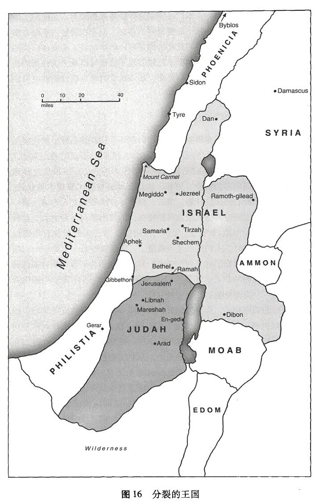
两个金牛犊，分别放在但和伯特利的圣所里 (《列王纪上》12：26-33)。对于北国来说，这可是不祥的开端，其接下来的历史便是一部背弃信仰的历史。主要由于北国进行偶像崇拜，上帝就借着先知亚希雅之口，宣告抛弃耶罗波安 (《列王纪上》14章)。
以利亚和以利沙面对不忠实的以色列
当以色列故事翻到这一页时，先知们在圣经故事中所起的作用开始变得越来越重要了。纵观以色列历史，无论是借着摩西、撒母耳之口说出来，还是借着其他先知之口说出来，上帝的话终始起着决定性的作用。然而，随着国王职权在以色列牢固地确立，先知的职责也更加明确地从其他公众角色来定义。《旧约》中所有《先知书》都出现于君主时代或君主制覆没之后，于是先知在以色列的职责就是对强大的王权起制约作用。不存在先知王朝，上帝呼召每一位先知，为要把他的话带到以色列，尤其是当以色列处于历史特定时期时，带给他们的首领们。以色列是一个神权国家，具有最高权威的是上帝的话，不是国王的话，因此，我们经常发现先知针锋相对地面对他那个时代的国王。例如，耶罗波安在儿子生病时打发妻子向亚希雅求助，于是这位先知承担起一项不被人嫉羡的任务，那就是告诉王后，只要她一返回她的城，她的儿子就会死。他还说，比起在耶罗波安王室其他成员身上将要发生的事，王子的死还更加令人好受一些。耶和华必“将以色列人从他赐给他们列祖的美地上拔出来，分散在幼发拉底河那边，因为他们做木偶，惹耶和华发怒”(14:15)。
然而上帝是有耐心的，能忍耐的，他没有马上就让北国灭亡。可悲的是，耶罗波安之后的诸王都在犯罪，与耶罗波安简直没有什么两样。亚哈登上以色列王位后，北国的形势恶化到了极点。亚哈娶了外邦女人耶洗别为妻，这个女人嫁过去的时候就把对巴力的敬拜行为带到了北国。国王和王后一起在以色列积极地推广对巴力的敬拜，他们对上帝的背叛完全到了厚颜无耻的程度。
在这种极端叛教的大背景下，先知以利亚登上了历史舞台。他必须借着耶和华的名面对亚哈。在以利亚与亚哈之间的斗争的背后，从更为
本质上说就是巴力与耶和华之间的冲突：北方会忠于谁。迦密山顶上上演了巴力与耶和华之间的公开大竞赛。以利亚把人们召集在一起，号召他们在巴力与耶和华之间不要摇摆不定，他说：“若耶和华是上帝，就当顺从耶和华；若巴力是上帝，就当顺从巴力”(18：21)。众人没有响应，于是以利亚献上两只公牛，并说真正的上帝会从天降下火来吞灭其中的一只公牛。巴力的先知整天呼求自己的神，却得不到回音。以利亚嘲笑他们说，或许巴力根本没有听见他们的话，是因为他可能睡着了，也或许外出旅游了。然后以利亚用12块石头 (代表以色列的12个支派)筑起一座祭坛，祭坛上放着木头和作为祭品的一只公牛，用水把祭坛浇了一个透。到了晚祭的时候，以利亚向“亚伯拉罕、以撒、以色列的上帝——耶和华”祷告，于是耶和华降下火来，烧掉祭品和祭坛。众民就俯伏在地，喊道：“耶和华是上帝”(18：39)。
我们应该从巴力与耶和华之间的这种生死对立的背景去认识以利亚的事工，并追随以利亚的那位门徒以利沙的事工。耶和华借着以利亚和以利沙消除了旱灾 (18:41-46), 饥荒 (17:8-16), 还帮人们解了渴(《列王纪下》2:19-22), 还了债 (4:1-7), 得了子嗣 (4:11-17), 治好了病 (5:1-19), 还使人复活 (《列王纪上》17:17-24; 《列王纪下》4：18-37)。巴力的敬拜者认为生活的这些方面都是在巴力的掌握之下，⁸⁸但以利亚和以利沙所表现出来的是，耶和华就是他子民的主，是他们生活的各个方面的主，也是全部受造界的主。
耶和华借着他先知而带来的祝福不仅仅是给以色列的。(叙利亚)亚兰军队的元帅乃缦因为长了大麻风，在绝望中来找以利沙寻求医治，上帝回答了以利沙的请求 (《列王纪下》5章)。于是乃缦回去时从以色列带了许多土，其重量是两头骡所能驮的最大量，以便他在自己的国亚兰也能在“那地”拜耶和华。这是以色列为万民带来祝福的极好例子，但可悲的是，以色列自己这个时候却越来越像它周围的异教民族了，因为以色列人拒绝只拜耶和华。
以色列步步陷入灾难，难以自拔，直至亡国
许多时候，《列王纪下》都是用“分别叙述两个王国的方式来讲述
南北两个王国的历史，读者会读到一些相同的、关于镜象革新及其结果的故事”。⁸⁹在北国，上帝呼召了耶户，以利亚膏立了耶户，然后耶户领受了一项特殊使命，就是去杀亚哈全家。他完成使命后，还依然拜金牛犊，继续着耶罗波安的一些做法。因此，以色列难以自拔地一步步走向灾难。亚述帝国是当时的中东大国，它对北国以色列的影响与日俱增。到何细亚作以色列王时，亚述入侵了北国以色列，围困了其都城撒马利亚达三年之久，并于公元前722年将以色列人掳到亚述(《列王纪下》17章)，这标志着北国以色列的灭亡。
《列王纪下》的作者在此稍作停留，花了大量篇幅讨论了以色列发生这种情况的原因。流亡使忠诚的以色列人心中产生一系列最为根本的疑问：那地难道不是耶和华亲自所赐?上帝的应许在何处?南国犹大又会发生什么事?上帝是否真的背弃了他对亚伯拉罕、摩西和大卫所作的承诺?
17：7-23 回答了这些疑问。作者明确表示，耶和华之所以这样惩罚北国，是因为他们背叛了盟约。虽然上帝已经 (借着他的先知们)反复警告人们偶像崇拜的后果，但人们不听劝告，继续犯罪，继续背叛上帝。所以“耶和华……从自己面前赶出他们”(17：18)。他们之所以流亡，不是因为亚述的强大，而是因为耶和华再也无法容忍他们了。在反思中，作者把话题转向了北国以色列的第一个王耶罗波安，并再次讲述了耶罗波安如何确立变节和叛逆的模式，正是这个模式使北国自始至终饱受灾难。
不祥的是，作者指出南国犹大也没有多大的不同 (17：19)。南国也将走向和北国一样的路。然而，犹大一直没有被征服，毫无疑问，那里的君主制要比北国曾经有的君主制成功得多。在公元前722年之后的一些岁月中，犹大出了两位杰出的王，希西家和约西亚，这两位王都很敬畏耶和华。既然还是由大卫家族成员统治着犹大，南国是不是还有希望?希西家的统治可以与北国的何细亚相提并论，但当亚述也威胁到希西家时，(与何细亚不同)他投身于耶和华了。上帝以先知以赛亚为中保，帮助了希西家，从而巩固了希西家的统治，犹大也奇迹般地消除了来自亚述的威胁 (《列王纪下》18-19章;参见《以赛亚书》8:6-10)。
图17 世界各帝国 ASSYRIA
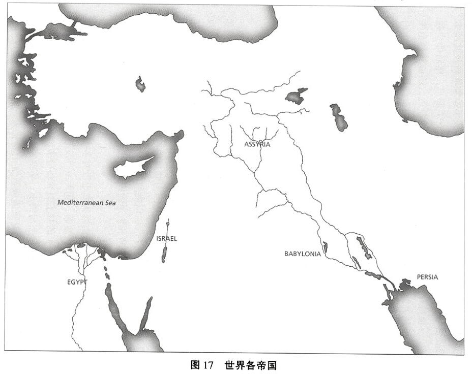
但是在希西家的统治时期还是出现了大麻烦的迹象。随着亚述的衰落，巴比伦成了新的地区强国。希西家愚蠢地带领巴比伦使者参观他的宝库，这个愚蠢的行为使得先知以赛亚发出了一条与审判有关的预言：南国也必将灭亡；巴比伦必征服犹大 (《列王纪下》20：12-19)。
《以赛亚书》1-39章中以赛亚的许多预言，编述以赛亚生活的年代有些含混。按照这些预言的说法，犹大总体说来是一个面临着审判的有罪民族，玛拿西王(希西家的继任者)进一步推动了偶像崇拜，促进了不同信仰的混和，因令不义在他的国中永久泛滥而出名，因此犹大的灭亡似乎是不可避免的。
但是玛拿西的孙子约西亚年仅八岁便突然登基了。他年轻的时候在圣殿听一部新近发现的律法书被诵读，这使他大为震动。于是他就带领犹大百姓公开忏悔，重新确立上帝与他们所立的约，开始对敬拜仪式作出重大修改。约西亚从而赢得上帝的欢喜，他的统治被大为称赞。虽然约西亚的生活和治理都值得作表率，但对犹大来说还是太不足量、太迟了，我们通过先知耶利米得知，约西亚的改革可能没有在国内得到广泛拥护。人们依然有叛教的倾向，在犹大可以越来越明显地感受到巴比伦笼罩的阴影。西底家在位时，巴比伦征服了南国，并放火烧了圣殿和王宫。公元前587和586年，耶路撒冷被毁，绝大多数犹大百姓被流放到巴比伦 (《列王纪下》25 章)。
我们读圣经关于以色列的故事，当读到这里时，很有可能感到这便是“结局”(参见《以西结书》7：1-2)，因为以色列人被掳到了巴比伦，成了奴隶，这当然看起来像个终局。但上帝对亚伯拉罕的伟大应许，他在西奈与以色列所立的约，以及他许诺大卫王朝将会永远存在下去，所有这些应许都到哪里去了?耶和华自己的殿都遭到了破坏！巴比伦打败以色列时耶和华在哪里?难道上帝对他子民的旨意最终沉入海底了?更为糟糕的是，上帝要通过以色列救赎受造界的意图失败了?
以色列只有在耶和华自己那里才能找到关于这些疑难问题的答案。正因为这样，先知的话在圣经故事中，以及在我们对以色列变迁的命运的认识中起着如此重要的作用。由于背叛上帝，以色列人被打败，被击垮——但耶和华还是主，他的意志始终不改变。在以色列被驱逐出家园
之前的数百年之久，它的历史中不断有上帝的先知的出现，这些先知经常对这一历史进行诠释，他们的话并没有因为以色列人的流亡而消失。耶和华绝不可能被限制在那地，尽管他曾仁慈地住在他的子民当中，以色列作为一个民族的明显终结并不是耶和华的终结。
《列王纪》上下两卷以一个不明确的盼望结束；犹大王约雅斤在巴比伦被释放，并常在巴比伦王面前吃饭 (《列王纪下》25：27-30)，以色列的故事也许还没有完全结束?以色列对未来最确定的盼望不在其历史记载中，而在其众先知的著作里。
众先知的话
我们已经简洁地关注了一下公元前9世纪以利亚和以利沙的事工。公元前8世纪的何西阿也在北国作过有力而感人的预言。他把以色列比作一位妻子，一位作了妓女的妻子——但她的丈夫不忍心抛弃她。丈夫苦苦地思念着妻子，盼望妻子回到自己的身边，做一个忠诚的妻子。何西阿就这样把恐怖的奸淫比作以色列对耶和华的背叛。何西阿子女们的名字使人想起以色列悲惨的处境：耶斯列 (“上帝播种”之意)、罗·路哈玛 (“没被爱”的意思)以及罗·阿米 (“非我民”的意思)。上帝因为自己子民的不忠而施与惩罚。这位先知子女们令人深思的名字是对以色列令人吃惊的谴责。
阿摩司是公元前9、前8世纪的另一位先知，他是一个牧人，受耶和华呼召成了南国和北国共同的先知。90阿摩司的布道很有新意，他表达的真理总是很震撼人心。他把耶和华描绘成一头捕食的狮子 (《阿摩司书》1：2)。在一篇非同一般的布道中 (1：3-2：16)，他将以色列的邻国逐一进行谴责。当他在对大马士革、迦莎、提尔、以东、亚扪以及摩押进行逐一谴责时，你们差不多能听到以色列人大叫“阿们”！然后情况发生了戏剧性的转变：阿摩司转而谴责犹大和以色列，因为它们拒绝耶和华的命令，国内偶像崇拜之风盛行，不义行为盛行，它们也会受到严厉的审判 (这里“阿们”声好像消失了)。
犹大亡国时期的耶利米和以西结对犹大进行了预言。耶利米在约西亚王统治犹大时，开始履行他的先知职责。他告诫犹大百姓不要只拜象
征上帝临在的事物，如圣殿。耶和华吩咐耶利米站在圣殿门口，告诫人们不要倚靠虚假的仪式。
万军之耶和华——以色列的上帝如此说：“你们改正行动作为，我就使你们在这地方仍然居住。你们不要倚靠虚谎的话，说：‘这是耶和华的殿，是耶和华的殿，是耶和华的殿！’你们若真在改正行动作为，在人和邻舍中间诚然施行公平，不欺压寄居的和孤儿寡妇，在这地方不流无辜人的血，也不随从别神陷害自己，我就使你们在这地方仍然居住，就是我古时赐给你们列祖的地，直到永远。看哪，你们倚靠虚谎无益的话。”(《耶利米书》7：2-8)
这样的布道并不受欢迎。甚至当他在苦苦冥思将要对南国说的话时，耶利米都遭受了强烈的反对。他的著作中到处都有祷告，这些祷告清楚地表明了他的巨大痛苦和努力。⁹¹例如在《耶利米书》12章，这位先知大声问上帝：“恶人为何亨通，大行诡诈的为何得安逸?”上帝反问耶利米：“你若与步行的人同跑，尚且觉累，怎能与马赛跑呢?”纵然耶利米现在大声疾呼，因为他意识到不义和毁坏，他也应该认识到自己的处境不会更好，只会更糟！在15 章，耶利米说自己曾经开心痛快地把上帝的言语当食物“吃了”，但现在他的痛苦却长久不止，他的伤痕深沉，无法医治 (15：16、18)。做上帝的先知当然绝不是一件容易的事。
所有这些先知的观点是，上帝的子民除非忏悔，回到他身边，并顺服他，否则审判在所难免。先知们开始不祥地说起耶和华的日子。他们预言这不是祝福的日子，也不是审判以色列仇敌的日子，而是审判以色列自己的日子。如我们上面看到的，那“天”已经到来了，先是到了北国 (公元前722年)，后又到了南国(公元前587和公元前586年)。
以西结在那些流亡巴比伦的以色列人当中做神的工作。他描述说耶和华的荣耀离开了耶路撒冷 (《以西结书》10章)，还向以色列人解释发生在流亡中的事。对以色列来说，被迫逃离家园是一场大灾难，而……诸如以西结这样的先知都坚持认为流亡不是“结局”。耶和华的旨
意依旧，正如他对亚伯拉罕、摩西和大卫所作的应许始终未曾改变一样。幸运的是，先知们关于审判的预言中点缀着关于上帝子民之盼望及未来的预言。因此，耶利米许诺说，这个民族必将结束流亡生活，回来重新占据应许之地。他盼望着那一刻的到来，如上帝说的，到那时：
我要与以色列家和犹大家另立新约……我要将我的律法放在他们里面，写在他们心上。我要作他们的上帝，他们要作我的子民……他们各人都要认识我。(《耶利米书》31:31-34)
流亡巴比伦之大灾难
因为对于以色列来说，应许之地和圣殿都具有如此重大的象征意义，代表其民族及其作为神所喜爱的子民的身份，因此流亡在外对于以色列人来说就成了他们所经历的大灾难。促成流亡的手段都是当时的一些大国：先是亚述，然后是巴比伦。亚述灭亡之后(公元前612年)，巴比伦控制了近东地区。巴比伦国王尼布甲尼撒于公元前605年在迦基米施打败了埃及，他和他的继任者一直保持他们的优势，直到 (公元前539年)被波斯的居鲁士打败。迦基米施战争后，南国犹大归顺了巴比伦，但一些年后犹大国王约雅敬背叛了他的巴比伦国王(《列王纪下》24章)。于是尼布甲尼撒包围耶路撒冷，把约雅敬的继任者约雅斤掳往巴比伦，使他成了阶下囚。10年后，西底家 (尼布甲尼撒任命的傀儡王)也背叛了巴比伦。于是尼布甲尼撒再次出兵耶路撒冷，但这回他的军队既毁了城，又毁了圣殿，还把绝大多数耶路撒冷百姓掳到了巴比伦(公元前587和公元前586年；《列王纪下》25章)。耶和华把不敬神的亚述帝国和巴比伦帝国当作了审判他子民以色列的工具。
我们要知道，耶和华并没有迅速把他的子民赶出应许之地。相反，《旧约》始终都在说上帝做出审判的举动是缓慢的，也是不情愿的。何西阿很有说服力地表达了上帝在作出决定，要把以色列人从应许之地赶出去时，所经受的巨大痛苦：“以法莲啊，我怎么舍弃你?以色列啊，我怎能弃绝你?(《何西阿书》11：8)。《旧约》中的先知们举了大量例
子证明上帝对他子民的耐心，以及他为呼召子民恢复对盟约的忠诚而作的不懈努力。
哈巴谷对南国发预言的时候，正是巴比伦的影响力向南国的生活投下阴影的时候。这位先知问上帝为何能够对不义、犯罪行为在犹大肆虐而置若罔闻，甚至予以放纵，他得到的回答很令人惊讶：上帝要利用巴比伦人惩罚以色列！在他其他的预言中，哈巴谷与上帝角力，设法与上帝的旨意保持一致。最后，虽然上帝的作法对他来说仍然是神秘的，但哈巴谷还是到达了信靠之地：
我听到耶和华的声音，
身体战兢，
嘴唇发颤，
骨中朽烂，
我在所立之处战兢。
我只可安静等候灾难之日临到，
犯境之民上来。
虽然无花果树不发旺，
葡萄树不结果，
橄榄树也不效力，
田地不出粮食，
圈中绝了羊，
棚内也没有牛；
然而，我要因耶和华欢欣，
因救我的上帝喜乐。(《哈巴谷书》3：16-18)
这一时期的诗歌和《耶利米哀歌》清楚地表明了流亡生活对以色列人而言是多么巨大的灾难。《诗篇》80章为耶路撒冷向上帝大声呼求：“你为何拆毁这树的篱笆，任凭一切路过的人摘取?林中出来的野猪把它糟蹋；野土的走兽拿它当食物”(《诗篇》80：12-13)。《耶利米哀歌》是一部结构严谨的哀歌集，有条不紊地讲述有关流亡者被迫背井
离乡所经历的巨大痛苦。正如《约伯记》讲述与个人所受遭遇的问题作斗争，《耶利米哀歌》也在讲述与一个全民族所受的苦难作斗争。约伯是清白的，但以色列是有罪的。《耶利米哀歌》清楚地阐明了以色列的悲痛，肯定耶和华的审判是正义的，并呼求耶和华让他的子民以色列复兴并拥有一个未来。以下这些诗句含有令人心痛的内容：“锡安的路径，因无人来守圣节就悲伤；她的城门凄凉；她的祭司叹息；她的处女受艰难，自己也愁苦”(《耶利米哀歌》1：4)。
或许有些反讽的是，这些作品反而叫流亡中的以色列人看到一丝希望，《耶利米哀歌》以耶和华为中心，引导了他们的悲痛，向以色列展现复兴和复国的可能。这类文学作品对以色列民族的生存是极为重要的，如果没有上帝借着先知所说的话，以色列人就不可能继续保持了认为上帝把他们当作他的子民这一意识。不错，圣殿是被毁了，但在流亡过程中，以色列开始懂得，上帝远不仅仅是他的圣殿而已，他远比这个民族本身要伟大得多。他的确是万民的主，一切受造物的主。虽然他的子民会经受巴比伦流亡，但上帝没有被征服。
虽然一些流亡者盼望能够早日回到自己的家园，先知还是不得不打碎了这个梦想。耶路撒冷毁灭后 (公元前587 和公元前586年)，先知们，如耶利米和以西结，就把精力集中在对以色列人的安慰上。耶利米坚持认为回归不可能来得那么快。他告诫流亡的以色列人“要为那城求平安，求繁荣，就是上帝使你们被掳往的那城”(《耶利米书》29：7)。上帝的子民曾经在外邦中作为少数民族生活过，现在他们必须再一次如此。
我们不是很了解以色列人流亡时的生活情况，可以肯定的是，他们在巴比伦的处境一定很不好——但还有比巴比伦更坏的征服者。在巴比伦人的统治下，以色列人至少可以成为巴比伦帝国的一部分，他们可以保留自己的社群，保留自己的文化和宗教特色。尽管如此，《但以理书》和《以斯帖记》这两卷《旧约》书卷却讲述了有关忠诚方面的冲突，这是虔诚的以色列人在流亡时期可能遭遇的。
《但以理书》讲述了但以理和三个年轻以色列人的经历，他们在公元前587和公元前586年以色列的大流亡之前15年就被掳到巴比伦。
但以理本人的故事是一个惊人的故事，叙述了一个以色列人在流放期间跃居政治高位，却拒绝放弃其信仰的关键特色。(在这里，他很容易使人联想起在埃及的约瑟。)这四个年轻人不但拒绝放弃自己的饮食律法，而且在那个习惯于非常奢侈饮食的地方健壮起来。但以理的三位朋友拒绝拜尼布甲尼撒所造的像(《但以理书》3章)，他们被罚活生生地投入火窑中，但逃过了一劫——后来，他们就在巴比伦政府中获得了提拔。但以理也反对偶像崇拜，他不向尼布甲尼撒造的像祷告，而且他虽然被罚扔进狮子坑，但同样也逃过了一劫(《但以理书》6章)。在上帝的帮助下，(与巴比伦自己的哲士不一样)但以理能够解尼布甲尼撒的那些梦 (《但以理书》2、4章)。
《但以理书》的后半部分包含但以理自己那些充满象征的异象，它们解释了历史是如何展开的。帝国相继盛衰，但它们的起起落落都在耶和华的掌握之中 (2:44;4:3、34;6:26)。事实上,但以理所传递的重要信息之一便是，上帝是至高无上的，只要仆人们把他放在生活中的第一位，上帝就会荣耀他的仆人们。在7：1-14 的异象中，有“一个像人子”的人来到亘古常在者 (the Ancient of Days) 面前,被赐权柄,获得统治万民的权力。在《福音书》中耶稣说他自己就是“人子”，他含蓄地声称他拥有那在但以理先知异象中应许给这个人物的权柄。
以斯拉和尼希米：以色列回归故土
公元前539年，波斯王居鲁士打败巴比伦，他允许想回归的以色列人返回。许多人返回了，但绝不是全部。《以斯帖记》成书于后来的波斯王薛西斯统治时期 (公元前486-公元前465年)，它是另一个关于流亡的以色列人的有趣故事。
以斯帖是一个以色列人，她代替了瓦实提当选为薛西斯王的王后。当时有一个叫哈曼的贵族位高权重，所有王室官员都给他下跪，敬重他，唯有以斯帖的表兄(以及养父)末底改不这样做，也许是因为这样做有偶像崇拜之嫌。哈曼很生气，说服薛西斯同意将帝国的全部以色列人都杀光。末底改把这个吓人的消息告诉以斯帖，并提示说：“焉知你得了王后的位分，不是为现今的机会吗?”(《以斯帖记》4：14)。为
了救犹大人，以斯帖通过揭露哈曼的阴谋，在薛西斯面前为以色列人调停。于是薛西斯把哈曼绞死了，而与约瑟、但以理一样，末底改也上升到重要的政治地位。《以斯帖书》从未用过上帝的名，这是令人感到困惑的，不过她呼吁百姓禁食——可能还包括向上帝祷告 (4：16)。这个故事透射出流亡中以色列人生活中的一种强有力的神助意识，普珥日庆祝的就是这一解救 (9:18-32)。
《历代志》的结尾提到的就是《以斯拉记》开头提到的事：波斯国王居鲁士下诏将在耶路撒冷重建圣殿 (公元前538年)。这是一件给人很大希望的事情，因为正是耶和华激动了居鲁士的心，使他这么做的(《以斯拉记》1:1;参见《以赛亚书》44:28至45:1、13)。居鲁士释放了所有愿意回归的人，以便在耶路撒冷重建圣殿。《以斯拉记》2章列出了归回者的名单：许多人选择了归回，但不是全部。我们只能想象圣殿被毁50年后他们在回归路上的心情。他们在家乡安定下来后，就聚到耶路撒冷，在耶书亚和所罗巴伯的带领下开始重建以色列之上帝的祭坛。这是一个极具勇力的行为，因为当以色列人流亡在外期间，已经有其他民族定居在这些地方了，而且以色列人也不知道这些民族会有怎么样的反应。
祭坛一造好，以色列人就庆祝住棚节了，这个节日提醒以色列人从埃及返回应许之地时住在旷野帐蓬的那段时光。因为这个民族现在又重新聚集在应许之地，在以色列人这个小群体中，这个盛宴必定是一个非常感人的时刻。祭坛和对上帝的敬拜强有力地象征着上帝显现在他应许之地的子民当中。纵然圣殿还未重建，以色列人的敬拜行为成为希望的巨大象征。定下了敬拜仪式之后，他们继续重建圣殿。虽然在耶路撒冷重建圣殿这样的工程遭受了当地人的反对，甚至面临着外来的压力，但最后以色列人还是战胜了各种不利因素。先知哈该和撒迦利亚的布道极大地鼓励了以色列人 (《以斯拉记》6：14)，他们从巴比伦回归约20年后，这些勇敢的以色列人完成了对圣殿的建造，并把它献给了耶和华(公元前516年)。
读以色列的故事至此，如果读者尚不清楚以色列人这一次是否会在事奉上帝方面比以前做得更好，这是情有可原的。《以斯拉记》和《尼
希米记》的余剩部分讲到了两位首领 (这些书卷以他们的名字命名)后来到了耶路撒冷，在带领回归者走上正轨中起到主要作用。以斯拉既是祭司又是文士，他于圣殿献于耶和华约60年后回到耶路撒冷。这时以色列人已经开始允许自己的民众与外族通婚，于是以色列的信仰和外族信仰融合了，从而再次为偶像崇拜打开了方便之门。以斯拉忏悔这个罪，提醒人们不要忘记上帝允许他们回归的这个恩典，并且他废除了这种婚姻。
尼希米是巴比伦亚达薛西王宫廷的一名斟酒人。当听说耶路撒冷城墙的荒凉光景时，尼希米请求允许他回到耶路撒冷 (约公元前445和公元前444年)。尽管面临巨大的反对，尼希米还是带领以色列人把城墙重新建起来了 (《尼希米记》1-7章)。以斯拉把以色列人召集起来，向他们宣讲摩西律法的书卷，而利未人则向以色列人传授律法(《尼希米记》8章)。听着律法，人们为自己的深重罪孽而哭泣。后来，当他们回顾与上帝的关系时——从受造到亚伯拉罕的呼召，直至当今——利未人带领他们做礼拜式的祷告。他们热心地向上帝祷告，更新耶和华与以色列民族之间的盟约 (9:38至10:39)。
到《旧约》结束时，以色列的前途还依然未定。虽然以色列人已回到了家园，但，即使重建了圣殿，作为一个民族，他们的生存依然脆弱：圣殿没有了从前的荣耀(参见《哈该书》2：3)。如果我们只关注以色列历史上这个时期的政治形势，就可能会对其未来真正感到怀疑。不过先知却使我们对以色列的未来更加有把握，更加相信上帝对他子民之旨意的成功实现。先知们的布道，多数都与当代的以色列处境有直接关系。但是先知们，无论是在流亡前，流亡中，还是流亡结束后，都展望着未来，谈说着将要发生的事情。为此，他们从以色列的历史中摘取形象比喻，说到“大卫之子”的未来、“锡安山”的未来、上帝仆人以色列的未来、以及圣殿的未来；他们为以色列人精心制作了一个关于未来的异象。
先知们的话很大程度上都涉及这么一个事实，即上帝因为他的子民不断背叛他而要对他们进行审判。上帝在万民中的荣耀和名声与以色列人的生活有利害关系，因此上帝无法容忍以色列的背叛。但这一点又很
自然地引发一些问题，这些问题与上帝有关以色列和整个受造界之未来的旨意有关。甚至在先知们宣布现在就要审判以色列的同时，他们还展望未来，宣告说上帝的旨意必会获胜，因为上帝是统治者。《耶利米书》(31章)论到一个“新的盟约”。《以西结书》(40-48章)论到一座“新的圣殿”。《以赛亚书》(49:6;52:13 至53:12) 预言了一个受苦的仆人将要到来，这个仆人将会真正成为万民的光。这些众多的形象共同构成了关于一个时代的异象，在那个时代，上帝会在他的受造界当中果断地实现自己的旨意，使他的子民真正地成为他的子民。受膏者弥赛亚必会降临，以色列必会真正皈依，百姓的心最终都归向了上帝 (如《弥迦书》5章所述)。在那个时代，万民以及所有背叛了耶和华的人都将受到他的审判。不过，那也将是万民获救的时代：
先知们孜孜不倦地为此作证，他们时常在预言巴比伦、亚述和埃及将受到审判时，有时会为着拯救的将要到来而爆发出欣喜。他们不断阐明这一事实，即弥赛亚结束对以色列、对万民的严厉审判后，一个新的、荣耀的以色列将成为天下万民归向的聚集点。⁹²
上帝没有忘记自己的应许。他会让以色列新生，并且如他向亚伯拉罕所应许过的那样，他会把万民带到自己那里去。上帝的国必在全世界建立起来。《旧约》就以这一盼望为结尾。
幕间
一个即将终结的王国的故事：
两约之间的过渡时期
随着《旧约》故事接近尾声，以色列人就在“那地”住下了，波斯人允许以色列人返回，他们在波斯人的统治下过着相对平静的生活。但随着《新约》故事的开始，情况就大不一样了。这个时候波斯帝国早已灭亡，以色列人正遭受着罗马帝国的野蛮统治。事实上，只有一小部分以色列人生活在巴勒斯坦——多数以色列人分散在罗马帝国各地，甚至还有以色列人生活在罗马帝国之外，他们同样遭受着异教的统治。无论是巴勒斯坦的犹太人，还是别处的犹太人，都热切地盼望上帝能够行动起来，为自己百姓带来解放。这个被掳民族压抑在心中的怒火沸腾起来，他们渴望有朝一日摆脱压迫的枷锁，把罗马人永远赶出自己的家园。因此，我们在阅读圣经故事的过程中，必须停下脚步来关注一下两约间的过渡时期，即《玛拉基书》与《马太福音》间以色列的四百年历史。在此期间，犹太人竭力调和以下二者之间的矛盾，即对上帝必将赐福的应许的信心和一连串愈发恶劣的异教统治者统治下的悲惨境遇。¹
巴勒斯坦的和散居的犹太社群
虽然波斯统治者允许犹太人从流放地巴比伦返回自己的家园，但真正返回的只有少数犹太人。那些返回巴勒斯坦的犹太人试图在巴勒斯坦恢复繁荣富强的犹太群体，我们在《福音书》中读到的通常就是有关这个犹太社群的情况。不过，绝大多数犹太人依然客居他乡，到公元1世纪末，犹太社群几乎遍布了当时文明世界的各个城市。²这些在巴勒斯坦之外且居住在万民中的犹太人，就是我们通常所说的散居的犹太人，即“分散在各地的犹太人”(来源于两个希腊词，意为“在……当中/到处”与“种子”，就像农夫将种子洒遍田间那样)。这些散居的犹太人始终相信，漂泊离散的以色列民族仍然是一个整体，所以他们热切地守护他们独特的盟约身份，维持巩固这一身份的宗教仪式，尤其是《摩西五经》依然是犹太人生活的基本。远离巴勒斯坦的犹太人当中，一些人比其他人更好地遵守了律法，更有效地抵制了异教文化的同化。但是，无论是犹太人对上帝的独特盼望，还是犹太人那作为神自己的子民的意识，都未曾消失。
为了维护其文化和宗教的独特性，犹太人 (包括巴勒斯坦的和散居的犹太人)建造了犹太会堂，以便在安息日做礼拜、祷告和研究圣经之用。对于身处异教文化的犹太社群来说，犹太会堂成了他们从事教育、司法、社交、经济以及政治活动的中心。安息日那天，犹太人聚集在会堂内做礼拜、祷告、聆听对圣经的讲解，不过，绝大多数犹太人认为会堂绝不可能完全代替圣殿。各地的犹太人始终景仰圣殿，盼望它未来的荣耀。他们缴纳圣殿税，常常在重大节日里去耶路撒冷朝圣。我们在研究发生于两约过渡期间的故事时，必须明白在巴勒斯坦之外还有众多的犹太人也同样在参与这些活动。
以色列人的信心
以色列人自亚伯拉罕时代起就跟随上帝了，这段两千年的历史形成了五大基本信念，塑造了两约期间犹太人的生活方式。这五大信念中的第一个是一神论：以色列人信独一的上帝，他是世界的创造者，也是历史的统治者。第二个信念是拣选：上帝拣选以色列是有特殊用意的，即上帝要借以色列民族 (而不是其他民族)来清除受造界的邪恶，这邪恶自亚当犯罪起就侵蚀和破坏受造界。借着与亚伯拉罕立约，上帝不仅许诺亚伯拉罕的后裔将成为一个大国，而且其他民族也会因犹太民族而最终得到上帝的赐福。第三个信念与律法或者说《摩西五经》有关：上帝已为以色列人立了法，以便引导他们过上配做上帝之圣洁子民的生活；上帝应许以色列人，只要坚持遵守这律法，他们就会蒙福。第四个信念与上帝借着摩西和约书亚赐给以色列人的那块地有关，也与建立在该地的圣殿有关。对以色列人来说，这块地不仅仅是一块产业而已，好像它不带有其他意义，也不仅仅是他们居住的家园、维持生计的菜园。这是一个神圣的地方，因为上帝与以色列人同住在这里(《撒迦利亚书》2：12)。除了这个地方，没有其他地方的犹太民族能与上帝进行如此丰富的交流沟通了。上帝亲自为自己的子民选了这个家，并尤为用心良苦地把耶路撒冷圣殿选作自己与犹太人见面的场所，这一事实便是定义犹太人生活的中心点。
因此犹太人相信，那独一真神选中了他们，让他们在耶路撒冷神的殿中事奉他，敬拜他；他们也相信，只要按着上帝的旨意生活，就能体验上帝的祝福。作为一个忠心的祭司的国度，他们必与邻邦分享祝福。他们知道，这是上帝为他们所安排的。然而，罪——就是他们对上帝的不忠——导致他们未能得到上帝所应许的。以色列人仿照周围异教民族的习俗已经有数代人之久了；偶像崇拜代替了对主的敬拜。然而----先知们向以色列人反复应许——然而，尽管以色列人对主不忠，主对他的百姓却始终都是信实的；主必将在自己选中的民族中并借着该民族兑现他的许诺。尽管以色列人会因为自己的罪受到审判，遭受惩罚，但上帝依然会恢复他曾经给予以色列民族的那份荣耀；他必完成自己的救赎工作。于是以色列人盼望将来能够得到上帝之救赎就成了第五个信念，它在两约过渡时期主宰了以色列人的生活。
矛盾日趋紧张：从波斯到罗马
然而，这些信念却在两约期间那四百年的以色列历史中遭受了严峻考验。虽然一些以色列人回到了上帝所应许之地，但是就连生活在巴勒斯坦的以色列人也照样遭受着一个又一个外族政权的统治，好像他们的流亡生活永远都不会有尽头。外邦人支配以色列人的政治生活，这已经是够糟糕的事，但更糟糕的是，犹太人还面临着被异教文化同化的残酷现实。这有可能危及以色列民族的生存和信仰，以色列是受拣选的民族，上帝正是通过他们将赐福传到全世界。当以色列人在这四百年间经受着考验和等候之时，他们想知道上帝为什么不介入进来拯救他们，为什么不在异教徒当中维护他自己的名。在一个接一个异教殖民政权狂妄的统治下，他们必定多次问道，众先知预言的应许都变为何了！
在波斯帝国的生活
当公元前6世纪波斯国王居鲁士颁布法令允许犹太人返回家园时，那个时候犹太人当中洋溢着一股强烈的喜气。毫无疑问，这是上帝在拯救犹太人！这是圣经的预言在应验，如《申命记》30：5-9所述：
他必领你进入你列祖所得的地，使你可以得着；又必善待你，使你的人数比你列祖众多。耶和华——你的上帝必将你心里和你后裔心里的污秽除掉，好叫你尽心尽性爱耶和华——你的上帝，使你可以存活。耶和华——你的上帝必将这一切咒诅加在你仇敌和恨恶你、逼迫你的人身上。你必归回，听从耶和华的话，遵行他的一切诫命，就是我今日吩咐你的。耶和华——你的上帝必使你手里所办的一切事，并你身所生的，牲畜所下的，地土所产的，都绰绰有余。耶和华必再喜悦你，降福与你，像从前喜悦你列祖一样。
《摩西五经》应许以色列人结束流亡后将得到赐福，以上是这些应许之中的第一个，而且流亡先知们，诸如以赛亚、耶利米和以西结等，也反复强调了这些应许。然而不久，犹太人当中的那种喜气就消失了，取而代之的是迷茫和沮丧。回归的流亡者所经历的没有如他们期望的那样，他们本所期望的并不亚于上帝借着他们这些选民发动一场普世大变革。这主要是因为：并非所有的以色列人都回到了迦南地，事实上很多以色列人仍然生活在他们早已定居了的巴比伦或埃及。虽然圣殿确实得到了重建，但新建的圣殿看上去已经风光不在，没有那被毁的(《哈该书》2：3)、所罗门时代的那圣殿雄伟壮观了。虽然以色列民族可以重新在上帝亲自赐予给亚伯拉罕的巴勒斯坦生活，但他们仍靠着外族——也就是异教——统治者的恩赐，才得以在此生活。
以色列人盼望能够在自己的土地上生活，不受外族的欺压；这一梦想促使许多以色列人再次关注圣经上关于祝福的应许，即他们这些年一直坚信不疑的应许。他们在圣经中的发现重新燃起其对《摩西五经》的热情：
你若听从耶和华——你上帝的话，谨守这律法书上所写的诫命律例，又尽心尽性归向耶和华——你的上帝，耶和华必再喜悦你，降福与你，像从前喜悦你列祖一样。我今日所吩咐你的诫命不是你难行的，也不是离你远的……我今日吩咐你爱耶和华——你的上帝，遵行他的道，谨守他的诫命、律例、典章，使你可以存活，人
数增多，耶和华——你的上帝就必在你所要进去得为业的地上赐福与你。(《申命记》30:9~11、16)
以上这段经文似乎可以解释他们沮丧的原因。如果一个民族就身体而言是重新回到了家园，但从政治上和宗教信仰上来说仍然是个流亡的民族，那么一定是因为上帝还不曾终止审判百姓违背他约的行为。所以，他们只有证明自己完全信奉律法，并确确实实开始“遵行他的道，谨守他的诫命、律例、典章”，他们才能够盼来彻底的、最终的拯救。结果是，教导的口述传统就形成了，在该传统中，学者努力将摩西这古代的律法应用于人们发现自己所面临的新形势当中。此外，他们还建造犹太会堂，用来向普通民众宣讲上帝的律法。
亚历山大大帝统治之下的希腊帝国
亚历山大的军队征服波斯人的时候(公元前331年)，巴勒斯坦的控制权和以色列人民的管理权就落到了希腊人手里。然而对于以色列的存在，更严重的威胁既不是军事上的也不是政治上，而是文化上的。亚历山大的高瞻远瞩是通过强制推行希腊化的(一个源自海伦 [Hellen]这个名字的词，海伦是一位传说中的古希腊 [“希腊的”由此而生]色萨利 [Thessaly]地区的部落首领)文化来巩固他的新帝国，包括希腊语言。
亚历山大实际并没有强制犹太人遵守希腊文化，但是，开始渗透以色列文化的希腊思想和实践，以及遍及各处的希腊语言本身 (如此有影响力以至于《摩西五经》的学者把他们神圣的经书也翻译成希腊文的，即七十士译本)都开始侵蚀上帝独一选民以色列人自己的文化和宗教的完整性。
当这个民族所有使其与众不同的东西都因为统治它生活的那些人的信仰和实践而受到质疑的时候，这个民族还怎么能是忠诚的呢?遵从异教希腊化的文化模式的压力在将来的岁月中只有增无减。
亚历山大之后的希腊帝国
亚历山大死时仅33岁 (公元前323年)，他没有子嗣，同时一场争
夺他广大帝国的斗争在他的将领之间展开。两个王朝——埃及的托勒密王朝 (Ptolemies) 和叙利亚的塞琉基王朝 (Seleucids)————各自统治着原亚历山大帝国领地的一部分，为了取得整个巴勒斯坦周边地区的统治权，他们向彼此的军队开战。以色列居于这对死敌之间，先被托勒密那一边统治 (公元前311-公元前198年)，后又被塞琉基王朝统治(公元前198-公元前164年)。在后一个时期，以色列人既保持着对上帝应许的信仰，又忍受着在外来文化的夹缝中生活，两者之间产生了张力，这种张力引发了强烈的危机。在塞琉基王安提阿古四世伊必芬尼 (Anti-ochus IV Epiphanes)统治的时代这一点尤为真实，这王活着的时候被赞美为“上帝显现”，但他的死却使得“上帝的大能显现”(《马加比二书》9：8-12)。
安提阿古四世面临着对他的帝国的两个严重威胁，一个是外部的，另一个是内部的：(1)罗马已经开始有了世界大国的规模，并向安提阿古索要大量钱财作为“贡品”，这贡品就是对罗马人的贿赂，使他们不进攻希腊人控制的领土。(2)希腊帝国的种族多元性本身产生了从内部分裂帝国的威胁；不同部落和民族派别之间爆发了战争。安提阿古通过以下方式应对这些威胁：(1)入侵多个附庸国 (如以色列)，掠夺他们的财物来还他自己的债，(2)强迫受支配的民族 (又如以色列)全盘接受希腊化的文化。他想使整个帝国同质化，以此 (他希望)结束帝国内部的战争。
在以色列，有许多人认为，掠夺和希腊化这两种政策，都是对他们作为上帝盟约之民的民族生活的直接进攻。安提阿古甚至敢于掠夺耶路撒冷上帝的圣殿，搬走所有有价值的东西：
他傲慢地进入圣殿并带走了金制的祭坛、放灯的灯柱，还有它所有的器具。他也带走了放陈设饼的桌子、奠酒的杯子、碗、金制香炉、幔子、冠冕，还有圣殿前面的金饰，他全部都剥去了。他带走了银子和金子以及昂贵的容器；他还带走了他找到的隐藏的宝物。(《马加比一书》1:21-23)。
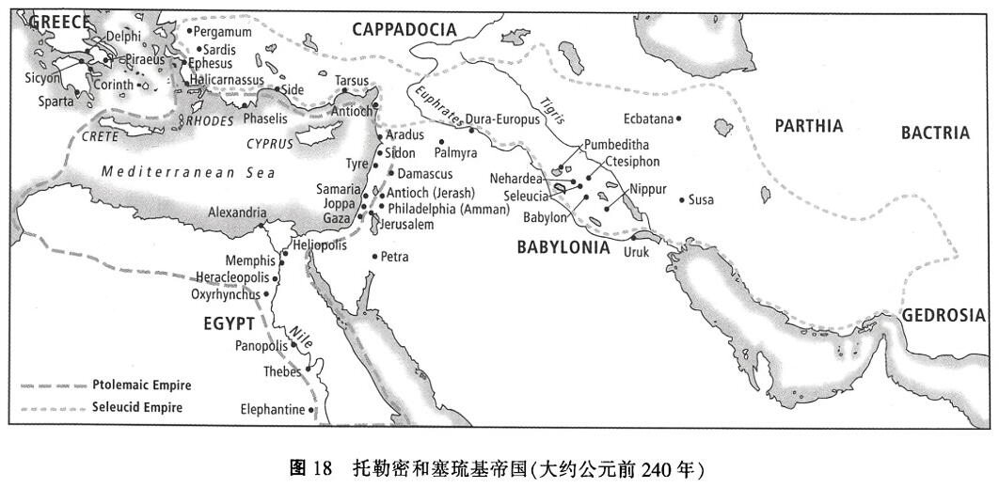
对于这个实用主义的希腊人来说，实际上，在以色列没有什么是神圣的。安提阿古在使犹太人希腊化的无情尝试中，通过了一条严格的法律，反对所有标示以色列是上帝自己的子民的宗教实践。他禁止割礼、禁止守安息日、禁止在圣殿献祭，那些敢于违抗安提阿古的人被用残忍的方式杀死。《摩西五经》的抄本被烧掉。犹太人被勒令献不洁的祭品给异教的神。最终，公元前167年12月25 日，安提阿古故意玷污圣殿以亵渎它，在里面为宙斯树立起一座祭坛并献上一只猪——犹太律法里最不洁的动物——作为祭品，而宙斯是希腊万神殿里超群的神。愤怒而悲痛的犹太人将这一举动称为《但以理书》(11：31)所说的“那行毁坏可憎的”、“那行亵渎可憎的”或者“行毁坏”。
但安提阿古没有料到犹太人对上帝不屈不挠的信仰以及为上帝的献身，以色列相信主会以行动来维护他的名并为自己收回圣殿、土地和子民，他们还相信自己必须以行动来完成上帝对异教徒的复仇，因此，犹太人奋起反抗他们的塞琉基王朝统治者。
马加比起义 (公元前167年)和哈斯门王朝 (至公元前63年)
起义始于一位年长的祭司，玛他提亚·本·约哈难(Mattathias benJohanan)，他被命令去向异教徒的众神之一献上不洁的祭品。玛他提亚拒绝做这事。相反，他同时杀了真的献上祭品的、妥协的犹太人和在那里负责实施自己国家法律的希腊士兵。在这勇敢而危险的反抗行为发生后，玛他提亚和他的五个儿子逃到沙漠里，在那里组织了一批反抗者。第二年这个老祭司死的时候，他的第三子犹大 (Judah)担任起了这些游击勇士们的领袖。犹大绰号马加比 (Maccabee，“锤子”)，因为他锤击敌人，因此忠于他的反抗者被称作马加比人(Maccabeans)。
尽管令人绝望的是，对手塞琉基军队在数量上远超马加比人，但马加比人仍取得了许多卓越的胜利。公元前164年12月25 日，距安提阿古亵渎圣殿三年的时候，犹大马加比 (他的拉丁文名字也被人们熟知，即 Judas Maccabaeus,特别是因为亨德尔 [Handel] 关于他的清唱剧)骑马进入到耶路撒冷，他大喊“和撒那 (hosanna)”并挥舞棕榈枝。他清理了圣殿，去除了希腊诸神的形象和外邦人的祭坛，还有其他令人鄙
夷的异教徒崇拜的装饰，把整个圣殿重献于主。一个新的节日，光明节(Hanukkah)，被设立来纪念这卓越的拯救，它将犹太人从他们的异教徒统治者手中救出来 (《马加比一书》4：41-61)；不过，塞琉基的统治被完全赶出以色列是在20年之后。这宣告了犹太人独立和自治时代的来临，在这段时间里，犹大马加比的哥哥的后代西门 (Simon，即哈斯门王朝 the Hasmoneans) 统治了80年。
如果我们要了解历史进程中以色列的故事，那么知道这些事件——安提阿古统治下塞琉基王朝对犹太人的压迫和随后对篡夺权力的异教徒统治者进行反抗的马加比起义——对我们来说很重要。这个事件像出埃及一样，对于犹太人来说已经成为他们历史上关键性的时刻：上帝以行动来拯救他的子民，恢复他的圣殿，并维护他的律法。既然上帝在这引人注目的救赎行动里探访过一次他的子民，他无疑会再一次做这件事。犹太人在异教徒统治者支配下受压迫的日子当然是结束了，上帝会恢复他在以色列的国，正如先知们长久以来应许的那样。
但是，这没有实现——还没有。反抗者的领袖玛他提亚·本·约哈难和他有名的儿子犹大马加比忠诚于上帝的统治和上帝赐予以色列的律法，然而，哈斯门王朝继任的国王们因为他们对异教的、希腊化文化的钟爱，也因为他们出于维系自己所继承的政治权力的考虑而极大地妥协了。
罗马拳中的以色列
自从200年前塞琉基一世和托勒密一世取得对希腊帝国部分地区的统治权以来 (在公元前323年，当亚力山大大帝死时)，罗马在财富和势力上就一直稳定上升。在公元前1世纪早期，罗马已形成其所在世界军事上和政治上支配性的强势。公元前63年，庞培大帝率领他的军队长驱直入耶路撒冷，将以色列也纳入了罗马帝国，并开始了罗马在那里持续将近五百年的统治。罗马选择间接地统治以色列，利用给予合作的(也因此是妥协的)傀儡国王以及总督：最后的哈斯门王朝者，大希律王和他的后代，以及最终一系列罗马指定的地方长官或提督，包括本丢彼拉多来施行统治。罗马政府(而不是犹太人！)还任命圣殿大祭司这
一重要职位。
以色列对它的异教主子一直感到的挫败和愤怒，现在找到新的靶子，即他们所有中最强大和残酷的罗马。很多向律法书寻求解释的人现在把罗马与先知但以理异象中四个从海里生出的“野兽”中最后和最坏的一个等同起来：“见第四兽甚是可怕，极其强壮，大有力量。有大铁牙，吞吃嚼碎，所剩下的用脚践踏。这兽与前三兽大不相同”(《但以理书》7：7)。这确实符合罗马在其帝国内处事的方式。罗马人通过强力、恐惧和胁迫，毫不顾惜他们所征服民族的文化敏感性，向他们征税直至贫穷，迫使顽固的犹太人强吞下有罗马人自己烙印的希腊文化，并对任何违背他们意志的人施以野蛮的惩罚。
在这种压迫性的统治下，对外邦人的种族敌视在以色列增加了。它外溢至包括对任何犹太人中那些与罗马合作之人，包括祭司和税吏中的很多人，以及对罗马指定的希律王和他的亲信，均有敌视。平民对于神回到他们中来并从耶路撒冷统治世界的急切渴望越来越强烈，在对一个由神统治的新王国的热望时，爆发出反抗可憎的罗马侵占者的地方行动。这些行动都被快速、残暴地镇压下去了，并以大量意欲反叛者被钉十字架为结局，作为反对罗马所付出的代价的恐怖展示。可以色列在将近耶稣诞生之前的一个世纪和之后的一个世纪里，仍然是一个顽固和不愿合作的帝国省份，在这个时期里大约有十到十二场革命运动是围绕着一个以弥赛亚或半弥赛亚自居的人物兴起的。³
因此，在耶稣到来的以色列中，希望和恐惧都很强烈，甚至到了狂热程度。人们厌倦了臣服于异教主子，对神国的到来满怀热望，并准备以行动去助其到来。
以色列对神国的盼望
以色列民认为历史是由两个截然不同的部分组成的：当前的时代和即将到来的时代。当前的时代始于亚当反叛上帝的统治及整个受造界被罪所玷污。因此，不可避免地，罪在整个当前时代的世上会继续兴旺，甚至在被呼召为那罪提供解决方法的、上帝自己的以色列民中也是如
此。但在即将到来的时代，上帝将介入进来以净化和更新他的造物。这次更新将从以色列开始，很多以色列人仍然因其罪而流散在异教徒中并(或)与上帝隔离。因此，在这次伟大的解放行动得以发生之前，上帝将需要处理以色列的罪。⁴犹太民中的很多人相信流散之夜将更为黑暗，直到神将他的最后审判带给他的民，这审判将如同黎明前的黑暗或出生前的阵痛。而后上帝更新之日将破晓，一个新的世界将诞生，而以色列将会是一个蒙赦免、净化和更新的民族。
通过这个新近准备好来迎接任务的民族，神将接着扩展救赎和复兴的福祉，甚至到四围外邦各族。而后救赎将达至更远，直到神复得整个世界，包括非人的受造界。所有这些将在历史的最后日子里发生：神的灵将浇灌在他的民身上，以使这一切成为可能，而当前罪的时代将会终结。神自身将拨乱反正，他将以有力的行动使整个受造界和整个人类重新生活在他仁慈的统治之下，他将把他的造物从罪的蹂躏、撒旦、痛苦和死亡中救出。
这种划分历史为两个时代的方法根源于《旧约》中先知的著作。以色列民从先知们那里了解到，上帝既不会放弃对其造物的原初目的，也不会弃绝与他仆人的盟约。在历史的终末神将回到地球以恢复他的普世统治，他将带来一次从罪中解脱的全面拯救，其间神的真知、公义与和平将满布全地。这拯救将始于以色列，而后万族将被聚集在以色列。
以色列民中的一些人相信，外邦各族将在这样一个时候，最终承认以色列的神为他们自己的王，并愉悦地生活在他的统治之下 (《以赛亚书》49：6)。然而更多的人赞同在圣经中另一种不同的预言主题，他们认为以色列注定成为那些先前对犹太人发号施令之人的统治者：以色列将战胜并征服外邦，而他们或者自愿地侍奉以色列，或者在神的审判中被毁灭 (《以赛亚书》60∶12、14)。以色列的长期受辱滋生出一种对异教压迫者如此强烈的敌视，以致响彻在以色列的主调不是万族将群集在锡安学习神的道 (《以赛亚书》2：3)，相反，以色列人希望外族被像窑匠的瓦器般摔成碎片 (《诗篇》2：9)。而在那天，那些仍然拒绝神的统治的人将面对神出鞘的愤怒，神在复仇中将摧毁长期阻止以色列依照他的盟约侍奉他的那些压迫者，以此神将拯救他的民。
这强有力的拯救行动将被一个弥赛亚 (一个希伯来语意为“受膏”的词，被译为希腊词“基督”)所完成，救赎的神圣代理人将是一个将领进神更新之国的受膏王者。也许救主将会是大卫自己的王族后裔，并通过领导他的人民在战场上反抗罗马人而解放这个民族；也许他将是一个使以色列恢复圣洁崇拜的祭司式人物；还有一些人相信上帝的救赎行动将通过不止一个弥赛亚来完成。⁵当上帝最终派遣他的使者去拯救这个民族时，关于他们应当期望看到什么，有许多相互冲突的观念，但关于一个受难的弥赛亚的观念几乎从未出现 (《以赛亚书》53：3；参见《路加福音》24:25)。
最被以色列盼望的异象是“神国”。以色列指望“除了神没有王”的日子，被异教徒践踏和玷污的圣土将得以净化，以便以色列能重新与神同在地生活；他将回到他曾离弃的圣殿并再一次住在他的民中间(《玛拉基书》3：1)。这个民族将从异教压迫者的捆绑中解放，正如它曾从埃及和巴比伦释放一样。凯撒在罗马以及他在以色列的傀儡王和祭司的统治都将被扫除，而神的统治将拨乱反正。即将到来的国将意味着从外国文化的支配下解放，并对以色列作为上帝选民地位的认赞；它将意味着，因上帝将他的灵浇在他们身上并“将他们心中的污秽除掉”(《申命记》30：6)，这个民族将在对上帝的顺从和忠诚上改过自新，以便他们能遵守律法。在过去世代里，那些在以色列流散和受捆绑的许多年里都保持对上帝忠诚的犹太人，将从死里复活，以体验——和活着的余民一起——即将到来的神国 (《但以理书》12：2)。在那日到来以前，以色列中忠实的信徒满怀希望地生活：他们祈祷，学习圣经，庆祝节日，好叫希望不灭，⁶保持对律法的忠诚，并继续准备军事行动。在这些方面，大部分人都同意；但在上帝将如何、何时和通过谁来完成这些事的问题上，以及在那一天到来之前他们将如何生活的问题上，犹太人当中有许多分歧。
以色列人期盼的不同表现
法利赛人
哈斯门王朝后期，诸国王因采取向异教希腊文化的妥协立场，很大
程度上已背叛了马加比家族起义的最初精神。对以色列的众多百姓而言，自己的犹太领袖的此类妥协，足以在他们对外邦篡权者的深仇大恨上火上浇油。尽管马加比家族成功地将早先的希腊领主们从巴勒斯坦驱逐出境，可希腊人却遗留下了他们那贻害无穷且蛊惑人心的异教文化。这一文化引诱着以色列百姓与他们的领袖们叛教离宗。这些东西绝不能存于以色列！有一种希望开始增长，他们希望昔日由老玛他提亚及其子犹大领导的革命能再次发生，借此所有的异教思想和生活的遗迹能和最后的外邦人一起，终将从以色列消除。一个这样的犹太民族主义者的群体——法利赛人，大约此时开始崭露头角。法利赛人在犹太会堂作为律法的和一种据说是源于摩西的口头传统的教师而著称，对这两件事迫切的需要激发着他们：(1)在这个民族中的革命性变革，让以色列人完全脱离异教思想和生活实践；(2)上帝的忠实信徒们对律法的绝对服从。
对于法利赛人而言，分别为圣与顺服是同一基本真理的两个面。因此，他们便强调律法书中标志着犹太百姓独一无二品性的那些方面。割礼、食物的条例以及对安息日的遵守，都作为分界标记获得了新的意义，将虔诚的犹太人与不敬虔的异教徒分开。许多法利赛人都准备着通过政治行动来推进神圣革命的进程，甚至不惜利用暴力。法利赛人取得了成功，因为他们表达了以色列百姓内心最深处的一些向往：他们对解放的渴想，他们对律法的忠诚，以及他们对一个由上帝亲自掌权的更新国度的一贯盼望。
爱赛尼派
这个群体同样是在马加比家族起义期间，因抵制希腊文化——它给以色列带来灾难——的同化，反对与希腊文化相妥协而兴起的。然而，他们不愿如法利赛人一样在体制内运作，他们选择了退隐之路。因为他们相信希腊文化的腐朽已经深深植根于以色列，甚至直趋圣殿，触及神职 (神职人员由罗马人任命)，所以爱赛尼派转身离开这一切的腐朽。他们相信唯独他们是真正的以色列人，是圣经应许的继承者和上帝解放大军的先锋！很多爱赛尼派的人隐退到耶路撒冷外的库姆兰地区
(Qumran)形成一个替代的社群，在那里他们研读经文，祈祷，并细心地坚持厉行律法书。
如前所述，对解救和未来国度的期盼，必须成为理解爱赛尼派的背景。他们相信，他们对摩西律法的忠心会使上帝恢复以色列的福祉。他们并没有参与起义，因为他们相信上帝会按照他自己所定的时候归来，差遣一位祭司兼君王的救世主来率领他们掀起一场反击外邦人和妥协的犹太人——所谓“黑暗之子”——的战争。他们相信，那个时刻已经不远。到那个时候，他们将揭竿而起，击杀上帝的异教仇敌。但在那之前，他们选择了寂静主义的退隐之路，坚持祭礼的纯正和祷告。
撒都该人和祭司
这些人是犹太律法的官方教师，并被公认为是主流犹太宗教的代表。和法利赛人一道，他们也是犹太人的统治议会——犹太公会——的成员。因为他们仰赖罗马人的恩惠才获取并保持着他们在社会中的显赫地位，所以祭司和撒都该人当然就不会拥有像法利赛人和爱赛尼派的那种革命之心。他们还缺乏大多数犹太人所持对变革的渴望 (参见《约翰福音》11：48)，正是因为与罗马人沆瀣一气，他们的权力才被稳固，所以他们完全有理由要维持现状。
奋锐党人
要定义这最后一个群体并不容易。与其说他们是一个组织，倒不如说他们是这个民族的一个亚文化群，代表有着不同兴趣的人的纵切面，还包括了那些心系以色列并欲拿起武器掀起暴力革命的许多法利赛人。奋锐党人从马加比家族起义的发起者老祭司玛他提亚的叙述中得到鼓舞。他“对于律法如此热忱”，并高声呼喊说：“凡热心律法，拥护盟约的,请跟我来!”(《马加比一书》2:26-27; 参见《民数记》25:6-15)，人们便齐聚来跟随他。奋锐党人继承了这一传统：他们忠于律法，极度抗拒对异教文化的妥协，信奉使用暴力达到他们的目的，如果必要的话他们还愿意为事业献身。
到了耶稣时代，以色列有很多奋锐党人的团体，他们渴望参加武装
起义，为的是解救他们的百姓，并洁净受异教玷染的这地和圣殿。其中有一个团体的人被叫做“匕首党人”，因为他们在衣袍下方藏匿着匕首以行刺妥协的犹太领袖。这些起义团伙往往由一位自称为“救世主”的人率领，毫无疑问，罗马当局会镇压此类团伙，把“救世主”钉死在十字架上，并且残忍地逼迫他的追随者们。这就是在主后6年的时候，加利利的犹大和附从他的人的命运，也是一直以来其他起义者的命运 (《马可福音》13:22;《使徒行传》5:36-37)。而在耶稣自己的门徒当中就有一位在圣经中被称为奋锐党的西门的 (《路加福音》6：15)。
普通百姓
这一时期，大多数犹太人并没有隶属于任何党派。⁷居住在以色列的人大约有50万，而散居在罗马帝国各处的可能有300万之多。多数人期盼着有一天上帝会回来拯救他的百姓逃离异教的压迫，这样，他们就能自由地遵从摩西律法，且在一块洁净之地上的洁净圣殿中，自由地敬拜上帝。他们最渴望的还是那被应许的弥赛亚，但在他到来之前，他们力求忠心，这样上帝将会加快弥赛亚到来的日程。他们努力在犹太会堂里学习律法，并尽其所能遵守它。他们会在他们自己的城镇，有时候也会在耶路撒冷庆祝节日。他们要祷告，守食物的条例和安息日，还为他们的男婴施行割礼。是的，他们在盼望中等候。
在这一火热期待的环境中，一个来自拿撒勒的年轻人，一个木匠的儿子，将要宣称，上帝的国已经到来了！如今这国就彰显在他的身上！
本页内容由站点发布者提供的授权 Word 版本转换而来。为保留原书内容，文字按源文件呈现；版权归原作者及出版方所有。